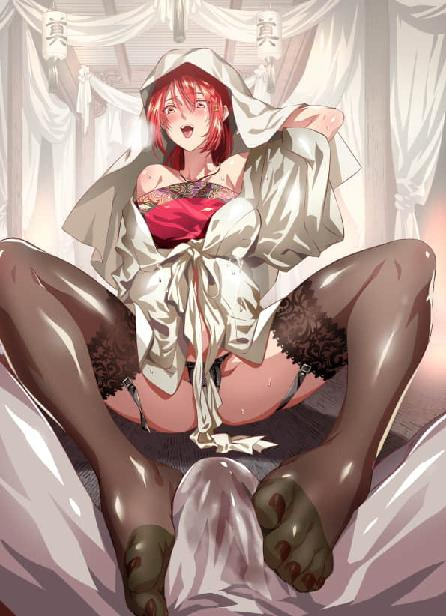
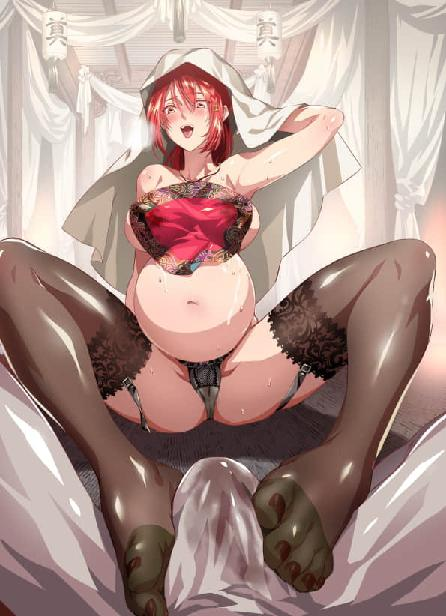

第77集·锦绣长安
唐国篇（1）
出版日期：2019-04-08
【本集内容简介】
山中小镇留仙坪，白员外遇狐的传说，百年来余音不绝，吸引了无数过客。
程宗扬在镇上偶遇熟人：神神秘秘的廖群玉，满腹心事的周少主，还有自称来自地球，同为穿越者的袁天罡！
而地球——据他所说，因为太阳爆炸，飞走了！
※ ※ ※ ※ ※

封面人物：潘金莲

封面人物：潘金莲（孕妇版）

封面人物：潘金莲（圣光版）
寒风四起，群山莽莽。曲狭的山谷间，一座小镇沉浸在苍茫的夜色中。
印着车辙的黄土路从小镇中间穿过，镇上唯一一间客栈位于镇子边缘，门檐下一盏半旧的白纸灯笼，在寒风中不住摇晃，上面“留仙”二字时隐时现。
一名戴着长脚幞头，穿着圆领袍服的中年男子立在院门前，翘首望着镇外的山路，满脸焦急之色。
院内有人叫道：“小二！烫壶酒来！”
“来喽！”
正在厨下帮忙的青衣小厮应了一声，从滚水锅中捞出一壶酒，放在托盘里，一手稳稳托着，一路小跑送进饭堂。
留仙客栈并不算大，东西两个小院，中间迎宾的大厅兼作饭堂。堂内摆着五六张桌子，其中一张围坐着七八个客人。上首是一名衣着富贵的年轻人，旁边坐着一名瘦小干枯的老者，一双眼睛骨碌碌转着，小得几乎看不见。
小厮放下酒壶，“客官慢用。”
老者摆了摆手，打发他离开。
一名坐在下首的壮汉举起酒杯，“少主，满饮一杯！”
年轻人矜持地拿起酒杯，浅浅饮了一口。
众人轰然叫好，随即操箸碰盏，放怀欢饮。
小厮折返过来，见中年男子还在院外，凑过去赔笑道：“越二爷，掌柜的已经带人去迎了。外面风大，坐屋里歇歇。”
“再等等。”那位越二爷望着山路，头也不回地问道：“院后的空地都清理过了吧？”
“收拾干净了。掌柜的还找人用黄土垫了一遍。”
“好。看着些灶火，炉上的热水别断了，一会儿人多，别耽误用。”
“厨下的灶火就没断过，热水、吃食、喂马的草料都备足了。”小厮说着笑道：“也是太仓促了，店里刚住了客人，不好让人搬出去。好在腾出来的西院也有三间上房，再加上几间大通铺，挤一挤，一二十号人也能住得下。”
“差得远呢。”越二爷自语道：“连人带马，三五十号都打不住……”
“越二爷，”小厮赔着小心道：“什么客人，还得你老人家亲自来接？”
越二爷竖起一根手指往上指了指，没有作声。
小厮“哦”了一声，虽然没弄明白，但不敢再问，心里嘀咕道：这么大的派头，莫非是传说中的大东家？
一阵寒风吹来，穿着青衣的小厮激灵灵打了个冷战，“越二爷，我给你烫壶热酒去。天儿冷，可别冻着了。”
“吃酒容易误事，沏壶茶汤来吧。”越二爷回头看了一眼，随口道：“你叫什么名字？”
小厮精神一振，连忙道：“回二爷，小的姓罗，单名一个令字。”
越二爷点了点头，从袖里摸出几枚铜铢，丢给小厮，“一会儿打起精神，伺候得好了，改天把你送到长安城的总店去。”
罗令大喜过望，“多谢二爷！”
罗令麻利地沏了壶茶汤，捧给越二爷。院内又有人唤道：“小二！方才的羊肉再切二斤！”
“来喽！”
罗令赶到厨下，等厨子老赵切好羊肉，用大盘盛了，转身送进饭堂。
那桌客人酒兴正酣，羊肉落席，众人纷纷举箸，热闹非凡。
罗令只认识坐在下首的一名白脸汉子，姓汪名臻，是镇上有名的破落户。
饭堂还有一位客人，却是一名身着布衣的白发老者。他独自坐在角落里，就着热水慢慢吃着胡饼，身后放着一面白幡，上面画了八卦，写着“卜卦相面”的字样。
罗令提着水壶过去，“客官，要不要再续些热汤？”
相面老者点了点头。
罗令见这位客人不喜攀谈，也不多话，续了热水，又拨了拨油灯，然后用沸水烫了抹布，一边抹拭着桌椅，一边偷偷看着另一桌客人。
酒过三巡，方才的壮汉道：“老汪，你是本地有名的英豪，可知道这留仙坪有什么来历？”
“哪里，哪里。”汪臻谦逊了几句，然后道：“留仙坪这地方虽然不大，可说起来历嘛，那可了不得……”
汪臻拖长了声音，见众人都竖起耳朵，静等下文，他操箸挟了两口菜，慢悠悠吃着。
“小二！”老者又道：“再来两荤两素，两份果子，记账上！”
“好咧！”
罗令答应着，心里却有些嘀咕。中午店里接到商州府的消息，说晚间有贵客路过，要在店里落脚。掌柜的让他们打扫客舍，准备迎客。谁知没过多久，长安总店的大掌柜越二爷单人独骑匆匆赶来，竟是要亲自迎候客人。自家掌柜识得厉害，赶紧腾出客房，里面被褥、用具全换了簇新的，又按照越二爷的吩咐，把镇上的猪羊鱼鸡、果蔬酒水全买下来备用。
留仙客栈所在只是个乡间小镇，仓促间也备不了许多货物。结果昨晚留宿的一帮客人见店里备了酒菜，也不急着赶路，要来酒肉大肆吃喝起来，还拉来镇上汪臻作陪。听越二爷的口气，要迎的贵客随从极多，备的酒食若是不足，可没地儿买去。
汪臻咳了一声，清清嗓子，开口道：“话说早年间，这留仙坪还是块荒地，周围拢共只有三五户人家，全靠在山窝里种些稷黍，勉强裹腹。”
“其中有户姓白的人家，家中有个小儿，人称白娃子。那白娃子自幼愚笨，别说认字，连数都不识多少。到了十来岁，愈发愚了，整日里痴痴呆呆，坐在山头发愣，认得的都说他是个傻子。谁知到了十五岁那年——你猜怎么着？”
汪臻卖了个关子，等众人伸长脖颈，才猛地一合掌，“那白娃子突然间开了窍！字也识了，文墨也通了，还作得一手好诗赋！你说稀奇不稀奇？”
一名三白眼汉子眨巴着眼睛道：“傻子还能写诗？”
“人生若只如初见，何事秋风悲画扇。”汪臻摇头晃脑地吟道：“等闲变却故人心，却道故人心易变……”
那位少主竖起耳朵听着，眼神有些飘忽。
在座的诸人都不大通文墨，也品不出好坏来。老者道：“留仙坪……莫不是仙人点化？”
汪臻一边用眼角瞟着那位少主，一边给自己斟了杯酒，“啯”地喝了，然后抹了把嘴，“咱先往后说——那白娃子有了知识，又突发奇想，要往京城赶考。家里拗不过他，变卖家当，凑足了盘缠。”
“谁知那白娃子鸿运当头，一举中了进士！”
“白娃子春风得意，还写了一首诗：九州生气恃风雷，万马齐喑究可哀。我劝天公重抖擞，不拘一格降人才！”汪臻吟完又赞叹几句，然后道：“白娃子这一下是鱼跃龙门，进了中书省，当了员外郎。”
壮汉瞟了上首的年轻人一眼，“员外？”
“中书省的员外郎，那可了不得。”汪臻道：“有道是三十老明经，五十少进士。白娃子中进士还不到十六，又进了中书省，常伴御前，眼看着就要飞黄腾达，青云直上，谁知又出了事。”
汪臻道：“那白娃子——如今该叫白员外了——作的一手好诗赋，被当朝宰相看中，要招他当女婿。你猜怎么着？”汪臻扫了众人一眼，拍案道：“他却婉拒了！”
众人一阵交头接耳。宰相招婿，他居然还不肯？莫非又犯蠢了？
老者道：“莫不是宰相家的小姐生得太丑？”
汪臻哈哈大笑，“老爷子说的是，那白员外眼界可高着呢。话说白员外因为招婿之事恶了当朝宰相，官也做得没滋味，他年轻气盛，索性辞官回乡，整顿家业。说来也稀奇，此处原本都是荒山，土地贫瘠，十种九不收，可他召来佃家，随便一挖就成了熟地，没几年便挣下良田万顷。这镇上的人家，当年都是他家的佃户。”
“白娃子的本名没人叫了，上上下下都敬他一句白员外。这白员外年过三十尚不曾娶妻，却从长安带回好些妖姬美妾。更奇的是时常有人投奔，尽是些如花似玉的小娇娘。时间久了，慢慢传出风声……”
见那位少主目光移了过来，汪臻压低声音道：“各位试想，那白员外原本笨得出奇，家境也贫寒。怎会忽然就开了窍？还中了进士？”
壮汉佯怒道：“你这老汪，净吊人胃口！”
汪臻笑着道了句罪，然后道：“白员外对此讳莫如深，倒是时间久了，内宅隐约有些传言，那白员外啊，果真是遇上了仙家。”
众人来了精神，纷纷催道：“快说！快说！”
“话说白娃子一直到了十五岁，还痴痴呆呆，左近都知道他是个愚的，连亲事也未曾说下。家里为此愁眉不展，他却丝毫不觉，整天不是发呆就是睡觉。这天半夜，白娃子睡得正熟，忽然闻到一股异香。白娃子睁眼一看，屋里不知何时多了个女子。”
“那女子不过二八年华，穿着一身白衣，生得花容月貌，犹如仙子。坐在他的炕边，正对着他笑。白娃子懵懵懂懂，只听那女子说，与他有缘，今日特来相报。”
“白娃子那时蠢笨如牛，压根儿不通人事，只是闻着那女子身上的香气，不知不觉间……下边就硬了。”
汪臻压低声音，说得猥琐，引得席间一阵窃笑。
“都说傻人有傻福，那憨儿竟是福星高照，不知哪辈子积的德。那女子也不嫌他土炕敝席，只嫣然一笑，便宽衣解带，裸着白白的身子上了炕，与白娃子成了好事。”
“自此，那女子夜夜都来陪他欢好，白娃子通晓了人事，正自得趣，那女子千依百顺，无不依从。但有一桩蹊跷，不管多晚，天亮前都会离开。白娃子虽然愚笨，心里也觉得奇怪。一天夜里，白娃子趁那女子睡中未醒，悄悄把她衣服藏了，又在她脚上绑了根红绳。”
“天快亮时，那女子醒来要走，却找不到衣服，待摸到脚上的红绳，更是骇了一跳。正慌张间，忽然外面传来一声犬吠……你猜如何？”
那位少主听得入神，接口道：“如何？”
汪臻一抚掌，“那女子倒地不起，现出原形，却是一条白毛狐狸！”
少主一拍大腿，“狐仙！”
“少主高明！”汪臻捧了一句，“这乡间狐仙的传闻极多，白娃子一看那女子现了原形，哪里还能不明白？于是用红绳绑住它，逼它吐出红丸。那狐女百般讨饶，但白娃子执拗得紧，只不松口。狐女受逼不过，只得吐出红丸，被白娃子一口吞下。”
“说来也奇！自打吞下红丸，白娃子立刻变得耳聪目明，心思灵动，不但能读书识字，还能写诗作赋，你说神不神？”
老头脑袋点得鸡啄米一样，“神了！神了！”
“更神的还在后面呢。”汪臻喝了杯酒，“那白狐可不是寻常的狐仙，而是个得道的天狐！吞过天狐的上品红丸，憨儿不但开了窍了，还多了一桩异处，不拘他身在何处，心念一动，方圆百里的狐女都会闻风而至，任其施为，丝毫违抗不得。”
少主若有所思地说道：“怪不得他不肯与宰相联姻，有狐女相陪，何须凡间俗女？”
“正是这个道理！”汪臻道：“前面说他入京中了进士，没过几年就辞官不作，带着数名艳女回乡，起了偌大的家业。每日里呼朋唤友，夜夜笙歌。据说天狐的红丸能令真阳不泄，神妙非常。”
那位少主狭长的眼中闪过一抹光亮。
“白员外直到寿登百岁，还能夜御数女，尽享人间至乐。最后乘风仙去，遗留的故园藩衍成镇，就是此地了。”
汪臻笑道：“方才两位问此地的来历。想那狐仙到此，便入其彀中，脱身不得，因此这地方也就被叫做留仙坪了。”
“原来如此！”少主感慨道：“有勇有谋，有胆有识！可为一叹！”
旁边的老者道：“这是哪年的事了？”
“总有百余年了吧。不瞒各位，汪某祖上就是给白员外做事的，小时候听爷爷说，我太爷爷还给白员外当过长随呢。传言白员外的内宅群芳荟萃，尽是人间难得一见的绝色。”
老者叹道：“也是个有大福气的。可惜未能一见。”
汪臻道：“前贤虽去，这留仙坪却成了一处灵地，每每有狐仙出没。这些年来虽然没有人能再遇上天狐，得了红丸，与狐女欢好的香艳轶事却是不少。运气好的话，说不定诸位今晚就能遇上，莫说春风一度，便是侥幸得了狐仙的红丸也未可知。”
壮汉笑道：“昔爷，今晚睡觉可得睁只眼，说不定有狐仙看上你了呢。”
众人哈哈大笑，罗令暗暗撇嘴。汪臻这破落户惯会察颜观色，全靠着一张嘴混吃混喝，平常惯用的伎俩，就是拿白员外遇狐说事。前面一番说辞敲鼓听音，若是文人，就会大讲诗赋，拼凑些章句，冒充白员外的诗文；若是热衷功名的，就会大讲当了进士之后，如何做官；若是热衷富贵的，就会大讲如何与豪门权贵联姻；若是贪图钱财的，就会讲辞官之后，如何起家兴业……总之就是四个字：投其所好。
那少主方才欲言又止，多半是席间不好多问，待散了席再讨教红丸的详情，这便上了汪臻那厮的套，左右要捞他一笔银子出来才肯罢休。
夜色越来越深，外面的越二爷也越发焦急。
忽然远处亮起一点灯火，接着马蹄声隐隐传来，一行车马从山坳驶出。越二爷长舒了一口气，连忙撩起衣袍，快步迎上前去。
客栈掌柜带了两个伙计一道去迎，这会儿早早便下了马，牵着缰绳在最前面引路。后面一名大汉虎背熊腰，雄壮威猛，他腰佩长刀，肩后背着一张铁弓，身形剽悍。
再往后是十余骑护卫，虽然不露峥嵘，但落在越二爷这等见惯了人物的老手眼里，那些护卫个个都是百战之余的精锐，杀的人只怕比前面那壮汉还多。后面五辆双辕的宽厢四轮马车，车上未打旗号，也没有什么多余的装饰，但一看车辆的木料、做工，就不是寻常货色。
车旁跟着一名彪形凶汉，却是一名兽蛮人。那兽蛮汉子虽是徒步，却与旁边的骑手差不多高。隆冬时节，他只披了一条兽皮坎肩，裸露的双臂生满浓毛，形如野兽，口中伸出一对獠牙，脸上印着一块巨大的青斑，顾盼间如同虎狼，凶狞可怖。
相比之下，车旁另几名骑手身形就纤细多了，体态窈窕，显然是女子。只不过她们头上都戴着圆笠，用来遮风的面纱从笠沿一直垂到肩下，看不清容貌。
一名富态的圆胖子纵马过来，他身着锦衣，后面紧跟着两名随从，一副纨绔子弟的模样。
石越在道旁伏身拜倒，扬声道：“在下石越，见过少主！”
小胖子跳下马，扶起石越笑道：“石二哥是吧？我听石超石大哥说，这边的生意全靠你来打理，这回可要劳烦二哥了。”
“不敢。”石越起身笑道：“接到家主的吩咐，小的就赶紧过来，所幸没有错过。不然，恐怕要大大地吃个挂落儿了。程……”
小胖子竖起手指“嘘”了一声，然后小声道：“不瞒石二哥，我师父不方便露面，外面的事都是我来操持。我姓高，名厚道。你叫我小高就行。”
石越心下有些失望，后面一名长随适时地插进来，“衙内，先上马吧。”
高智商翻身上马，“石二哥，请。”
掌柜也赶紧牵来一匹马，扶着石越上马。
石越心下暗暗计较，既然被称为衙内，多半是宋国人氏，口上试探道：“不知高公子仙乡何处？”
“我？临安人氏。”高智商满不在乎地说道：“我爹高俅，不怎么争气，一大把年纪了，只当了个太尉。”
“哎哟！”石越虽然是唐国客商，宋国太尉还是听过的，实打实的军界第一人，这衙内的身份可不简单。
两人说笑着往客栈走去。客栈的掌柜带着伙伴把众人迎进院内，将马匹安置在马厩中。安置不下的，都带到店后已经打理好的空地上，然后送来早已备好的草料、豆粕、饮水。
敖润背着铁弓在客栈内外踩点，韩玉、郑宾、刘诏等人都是行惯路的老手，张罗着将四辆马车靠着院墙围成一个挡风的小圈子，然后在中间搭起帐篷，铺好干草和毡毯。
最后一辆马车驶进院内，一名脸色苍白的黑衣人从车尾跳下，阴沉着脸绕了一圈，用鼻子四处嗅了嗅，然后脚往后一踢，“呯”地把院门关上，门板险些撞到石越的鼻子。
石越一路跟随，本来想向贵客献个殷勤，却被人毫不客气地拒之门外，脸上讪讪的，有些挂不住。
“该死的阉狗！”高智商隔着院门小声骂道：“混账东西！狗仗人势！王八行子！没卵子的货色！干！”
骂得虽然欢实，但声音压得低低的，生怕被中行说那狗贼听到。
石越这才晓得，方才那人居然是个太监。家主只告诉他，程氏商会的少主前往长安，让他沿途接送，途中一切用度不计成本，不计人力，务必让贵客满意。关于这位程少主，家主没有讲多少，石越还是回建康时听人说过几句，此时方知程少主身边的近侍居然是太监，堂堂宋国太尉的衙内，也只是个跑腿的徒儿。
这背景深不可测，难怪自家主人如此上心。
高智商骂完，拉着石越往饭堂走，小声嘀咕道：“那阉奴是个没眼色的，石二哥不要放在心上。我师父不方便露面，真没有故意为难二哥的意思。”
“明白明白。”
高智商亲热地往石越肩头拍了一把，“二哥多体谅，谢了！富安！富安！”
高智商一迭声嚷着，让富安把自己亲手从云水钓的几条鱼取来，好让石二哥尝尝鲜。
赵合德透过车窗看得清楚，见中行说自作主张，把人关在门外，不由好笑。她想想又觉得不合适，扭头道：“你不去见见他们吗？”
“算了吧。”程宗扬道：“见面就剩磕头了，什么事都说不了。让高智商跟他们打交道吧。剩下的等见着石胖子再说。”
石越是金谷石家的主事，主掌唐国生意，在唐国商界也颇有些身份，但说到底不过是石家的世仆，有高智商跟他打交道足够了。
赵飞燕脸色雪白地躺在软榻上，歉然道：“都怪我，连累了大家……”
“这能怪你吗？谁能想到正好遇上起风，云水的浪会这么大？别说你这种以前没走过水路的会晕船，我都有点晕呢。”程宗扬道：“在船上这几天，晃得我做梦都想吐。”
一行人离开舞都，从舞阳河口乘船北上，没几日便遇上北风大起，云水风浪大作。赵飞燕等人不惯乘船，晕船晕得厉害，不得已弃舟行陆。
洛帮派来的船只在最近的码头停下，众人分成两路，小紫与吕雉、惊理、吴三桂等人按照原路，打着汉国使节的旗号，走云水北上，从渭水进入长安。吕奉先本来跟高智商玩得高兴，但程宗扬怕他上岸惹事，塞到船上，由吴三桂盯着。
剩下的程宗扬、高智商、敖润等人，连同诸女走陆路。他们上岸的房州属于唐国山南东道，沿途重山叠障，一路跋山涉水，结果飞燕又在路上晕车，比走云水还要辛苦。
“都怨我，非要带你上路。”程宗扬摸了摸她的脸颊，“又瘦了。”
赵飞燕道：“是我想跟你的。”
程宗扬知道她的心思。洛都之乱，最惨烈的战事都发生在长秋宫周围，死者逾万。宫人数量锐减至不足三成，一到夜间，宫中阴风阵阵，甚至还有闹鬼的传言。程宗扬一去舞都，再无人陪护，姐妹俩惊心之余，大着胆子逃出宫禁，宁愿陪在程宗扬身边，也不肯在宫中享受尊荣。
蛇夫人走过来，摘下斗篷道：“院子里只有三间客房，奴婢刚进去看了，收拾得还算干净……”
话音未落，中行说的呵斥声便从车外传过来，“愣着干嘛！还不赶紧去清扫打理！满屋子的秽气，能住吗？没长眼睛啊！贱婢！”
蛇夫人笑道：“寿奴和光奴又挨内总管的骂了。”
在登基大典上一通胡闹，作为待罪之身的中行说仍然毫不收敛，在内宅照样以总管自居，对一众奴婢呼来喝去，气焰嚣张。尤其是成光和孙寿二女，本就地位低下，又是他这个帝党余孽的眼中钉，没事儿都想踹两脚那种，逮到机会便斥骂不绝。
对中行说这厮，程宗扬也是恨得牙痒。要不是紫丫头要留着他，自己早就把这死太监给活埋了。
阮香琳道：“三间屋子，侯爷住上房，剩下两间厢房，姐妹们挤一挤吧。”
“给贾先生留一间，”程宗扬道：“我瞧他路上也颠簸得厉害。顺便让义姁去看看。”
阮香琳迟疑道：“贾先生住进来？毕竟是内宅……”
程宗扬此行，身边的女眷就有十余位，且不说三间客房本就不够，再来一位男客，众女出入都不方便。
“让高智商跟他一道住。反正就一个晚上，要是觉得不方便，用布幔隔开好了。”
“那好。”阮香琳笑道：“我去厨下熬些姜汤，大伙儿都喝一口，免得赵娘娘又是晕船又是晕车的。”
赵飞燕本想道歉，话到嘴边又顿住了，“多谢姐姐。”
这边高智商与石越一道往饭堂走去，敖润迎面过来，两人交换了一个眼色。
高智商对石越道：“只顾着赶路了，石二哥，我先上趟茅房。”
“这边。”石越指了指方位。
高智商钻进茅房，片刻后敖润也跟了过来，一边解着裤腰带，一边道：“里头有一伙江湖人，看着不怎么安分。”
“赶走？”
敖润皱眉道：“有个硬点子，有些扎手。”
“多硬？”
“比我强点儿。”
高智商摸着下巴道：“那也没多硬啊。”
“滚！”
“开个玩笑嘛。”高智商放松下来。且不说车队这帮兄弟个顶个的能打，就是师父那些姬妾侍婢，也都不是善茬。真要放开来拼杀，几名江湖汉子根本不够打的。
敖润道：“一会儿盯着些，他要不惹事，咱们就井水不犯河水……”
“别啊。”高智商道：“赶了一天的路，还要费心盯着他们？让我说，还是找个茬，把他们赶走了事——咱们自己住的地方都不够呢。”
※ ※ ※ ※ ※
饭堂内，汪臻正在说一起书生遇狐的轶事，刚说到妙处，客栈掌柜领着一行人进来，将余下的几张空桌都占了。
那位少主斜了一眼，微微皱眉，没有作声。
又过了一会儿，一名商贾陪着一个锦衣华服、鼻孔朝天的小胖子进来，径直坐了上席。那小胖子呼喝着让小二上菜，对旁席理都不理，一副目中无人之态。掌柜的满脸堆笑，把小厮赶到一边，自己在旁端茶递水，殷勤之极。
那位少主神情倨傲地瞥了一眼，淡淡吐出两个字：“纨绔。”
旁边的老者赞许地点点头，然后扭头朝旁席冷哼一声。
声音不高不低，正好能让人听见。刘诏起身欲待理论，却被富安扯住，小声嘀咕道：“多大点儿事？”
高智商“呯”地一拍桌子，“好你个富安，你属鳖的！遇事就缩头，要你有个屁用！”
那位少主一声长笑，霍然站起身，“十年踏破山河，平生剑试天下！对敌无情！对天无畏！此生无惧！你若想仗势欺人，便让你看看我的手段！”
“你说谁仗势欺人呢？”高智商叫道：“是你先找茬的吧？老刘，揍他！打赢了少爷我有赏！”
石越劝道：“高少息怒，素昧平生，如此动气不值当……”
“素昧平生就这么胡咧咧？石二哥，不是我不给你面子。被人骂到脸上，我还能忍？老刘，上！教教这货做人！”
刘诏抓起靠在椅侧的佩刀，下巴往门外一指，“屋里头施展不开，出去玩两手？”
那少主冷冷一笑，腾身跃到院中，长喝道：“你要战！那便战！”
两边都摆足了声势，程宗扬在院中都听到动静，不由心下生疑，下车走到门边一看，下巴险些掉下来，“怎么是他？”
院中那位傲骨铮铮的好汉，正是来自大弁韩的周族少主周飞。数月不见，他神情愈发冷傲，往那一站，便是一副睥睨众生之态，目无余子。这要让小狐狸看见，当场就得抽他。
刘诏握着刀鞘出来。
周飞手一招，喝道：“枪来！”
大主灶捧起一杆长枪，扔了过去。
高智商愣了一下，“你不是剑试天下吗？”
周飞接住长枪，冷笑道：“兵不厌诈！”说着腰马合一，长枪毒蛇般刺出，攻向刘诏的咽喉。
刘诏挥刀劈开枪锋，脚下一顿，脸色变得凝重起来。这厮虽然不知所云，莫名其妙得紧，手底却极扎实，确实有两下子，这一场不拿出点压箱底的手段，只怕还真讨不了好。
刀短枪长，不利远战。刘诏抢上一步，长刀疾劈，似乎要荡开枪锋，直取中路，触到枪杆的刹那，却施了个黏字诀，劲力含而未吐，刀锋贴着枪杆抹下，切向周飞的手指。
周族众人齐声喝彩：“好刀法！”
“看此人修为，只怕是世间有数的高手！”
“少主危险了！”
一帮人七嘴八舌，将刘诏夸得天上少有，地上无双。
周围人哪儿见过这种场面？看着周族众人，就如同看傻子一般。
周飞傲然一笑，长枪荡出一个丈许大小的圆弧，像是要将刘诏逼开，枪至中途，蓦然枪影一收，却是用枪尾攻向刘诏的胸口。
刘诏撤刀封住，两人刀来枪往，在院中比斗起来，一连十余招，不分胜负。
正打得热闹，两匹快马在客栈外停下，一名中年文士带着随从进来。
那文士看到院中的比拼，不禁一怔，再往旁边看去，更露出几分错愕，“高衙内？”
高智商转过头，也是一脸的稀奇，“老廖？嘿！你不在临安待着，怎么跑这儿了？”
廖群玉苦笑道：“这话该是在下问衙内的吧？多日不见，衙内……可是清减多了。”
“我爹说了，读万卷书，行千里路。”高智商恬不知耻地说道：“书我读完了，出来行行路，好回去接管我爹的家业，免得让他给糟蹋了。你这是公干？”
廖群玉笑道：“出来办点事。没想到会遇见衙内。”
“可不是嘛！他乡遇故知，这简直就是缘份！”
廖群玉是贾师宪的心腹，与自家便宜老爹多有来往，高智商跟他也不陌生，当下问道：“我爹咋样？我上次送回去的吃食收到了吧？果然不是亲爹，我出来这么久了，他都不说来看看我！不会是趁我不在家，给我找了个后娘吧？好嘛，他的宝贝儿子在外面风吹雪打，他在家里抱着小娘儿们热热乎乎，心里还有我这儿子吗？”
高智商一通不着边际的抱怨，惹得廖群玉苦笑不已，解释道：“太尉奉诏整顿禁军，几个月都不得闲。”
高智商哂道：“还整顿禁军，弄得跟真的一样。就禁军那鸟样，有个屁整顿的，赶紧解散拉倒。”
廖群玉笑而不语，等他牢骚完，扯开话题道：“倒是衙内出来这么久，临安可寂寞得紧了。”
高智商哈哈大笑，“那些小媳妇、大婶子们都想我了吧？”
廖群玉知道这位花花太岁的性子，顺着他的脾气说笑几句，然后望着场中说道：“这是？”
“禁军的刘诏。”高智商双手拢到嘴边，叫道：“老刘！你娘的没吃饭啊！干他！往死里干他！”
碰上高衙内这么个不着四六的货色，廖群玉也是没辙，只好扭头看着富安。
富安小声说了原委。本就是几句口角之争，算不得什么大事，无非是招惹了自家衙内，给他点颜色看看。
廖群玉对着高衙内拱手作了一揖，“周少主出言不逊，在下替他向衙内告个罪。”
高智商道：“怎么着？你们认识？”
“正好有些事要办，还请衙内高抬贵手。”
高智商好奇地问道：“什么事要劳动你这位相爷心腹？”
“这个……”廖群玉似乎有些为难。
“得了吧，谁不知道你是给贾老伯做私密事的？”高智商撇了撇嘴，“多稀罕似的。”
廖群玉只好道：“不敢瞒衙内，也不是什么秘密事，无非是相爷性喜读书，每年都会派在下前往各处搜罗诗文书卷。这位周少主颇有些秘藏的珍本，今日约好与在下在此见面。”
“当我没读过书还是怎么的？书有小媳妇好看吗？你就糊弄我吧。”高智商不屑地说道：“得，就当我没问。神神秘秘的，你愿意说我还懒得听呢。老刘！给廖叔个面子，罢手吧。”
刘诏罢手跳开，谁知那位周少主却是不依不饶，长枪一振，追着刘诏刺去。
枪势及远，越是外围威力越大。刘诏起手时闯入枪圈，才能缠斗许久，此时一退，被他枪锋压住，顿时落入下风，接连遇险。
围观的周族诸人轰然叫好，眼看刘诏落在下风，还逮着往死里夸。要是换个不知情的，还以为那位周少主全程被对手碾压，此时局面才突然翻转，成功将围观众人打脸。
周飞一连数枪，逼得刘诏手忙脚乱，接着又是一枪，将刘诏长刀荡开，胸前空门大露。他双腕一翻，长枪笔直刺出，长声喝道：“看我的大天龙大霸——”
“退！”敖润大吼一声，举盾抢身撞上枪锋，将刘诏护了出来。
周飞被重盾逼开，还待蓄势再攻，廖群玉赶紧扯上随从上前拦住，又拉了昔大主灶一道劝说。
一通软话下来，周少主这才罢手，带着冷漠的傲然收回长枪，在族中众人的簇拥下，回到饭堂。
“没意思。”
高智商赶人不成，觉得折了面子，也懒得再进去跟周飞待在一处，借口屋里头憋闷，叫上石越和廖群玉，到宿营处生起篝火，要给两位表演一手现场烧烤。
刘诏和富安跟着自家衙内一道离开，一帮人来得快去得也快，饭堂里只留下一桌客人。除了敖润和几名兄弟，还有一位脸色不佳的布衣文士，一个留着浓密须髯的男子。
贴上须髯，程宗扬凭空老了十岁，容貌也遮住大半。他与护卫们混坐一处，屋里灯光又暗，即使熟人也未必能认出来，何况只有一面之缘的周飞？事实上那位周少主根本就没理会这些随从下人，只淡定地抚着长枪，对属下的奋力吹捧露出几分冷漠。
倒是那位与廖群玉同来的随从一边笑着附和几句，一边不动声色地朝这边打量了几眼。
贾文和要了碗热汤，慢慢饮着祛寒，一边道：“久闻唐国国力殷实，此番一见，果然名不虚传。”
韩玉配合道：“这一路都是山道，真没看出来殷实。”
“单是这条山路就不简单。能从山间开出数百里的山路已非易事，何况修葺完好，还用黄土垫过，所用的人力、物力非同一般，可见大唐国力之盛。还有这客栈，只是乡间落脚之地，却比得上他处郡县的规模。”贾文和叹道：“岂非国富民强，甲于天下。”
程宗扬没有作声，目光不经意地扫过，瞟了眼那名落魄的算命老者，最后落在看似冷漠，实则享受的周飞身上。
离开太泉古阵已近半年，周飞北上唐国也不奇怪。但廖群玉那番说辞绝对是骗鬼的。周飞出自三韩之一的弁韩，认不认识字都难说，还扯什么家传的秘卷珍本？廖群玉身为贾师宪的谋士，千里迢迢跑到唐国一处偏僻山镇，与八杆子打不着的周飞会面，内幕肯定不简单。
周飞与晴州的广源行关系紧密，而贾师宪对晴州那帮商蠹深恶痛绝，他们两边怎么会扯到一起了？
程宗扬看着周飞，心里暗暗道：这小子还一脸臭屁呢。他最大的底牌，那个住在小罐子里的随身老头都被死丫头拐走，成了一名自由歌者，莲花落的吟游诗人。底牌没有了，全靠桌面上这些明牌，自己只要愿意，今晚就能让周族灭族。
程宗扬想着，心里不由微微一凛。
自己看周飞不顺眼，说到底也只是不顺眼而已，双方毕竟没有什么了不得的深仇大恨。动辄便起杀心，戾气十足，这可不是好事。自己虽然突破了第六级通幽境，避免了生死之祸，但积累的负面情绪不是短时间就能化解干净的。
那帮属下好不容易吹捧完，周飞淡淡道：“后来呢？”
汪臻怔了一下，赶紧道：“后来啊……那位书生被狐仙迷住，日渐消瘦。忽然有一日在路上遇到一位和尚，那和尚是有道行的，一见之下，顿时大吃一惊。当下拦住公子，说他面带妖气。那公子将信将疑，按和尚的指点，买了两瓶雄黄酒……”
汪臻绘声绘色地讲着狐仙被雄黄酒灌倒，露出原形，最后照例是一通财色兼收、建功立业的大圆满结局，哄得周飞心满意足。
几人纷纷起身，昔大主灶摸出一串铜铢，一边道：“小汪，你方才说那公子当上高官倒也罢了，可他一介书生，居然去边关立了偌大的功业，听起来不像真的吧？”
汪臻洒然一笑，“大主灶有所不知，这位公子不是旁人，正是那位白员外。白员外久负凌云之志，岂止一富家翁？”
那破落户信口开河，程宗扬收敛心思，一边漫不经心地听着，眼睛只盯着周飞旁边那名与廖群玉同来的随从。那随从貌不惊人，偶尔一瞥却目露精芒。而且看他的举止，显然与周飞更加熟稔，虽然与廖群玉同行，但明显不是贾师宪的手下，很可能是双方联络的中间人。这么一个高手，却假扮成廖群玉的随从，让人不得不心生疑窦。
正思索间，耳边忽然飘来一句话语：“想那白员外出征之前，曾经吟了两句诗：苟利国家……”
程宗扬心头一震，目光落在那名破落户身上。
周族诸人吃饱喝足，回房休息。汪臻卖弄了一晚上的嘴皮，虽然拿到的赏钱不多，好歹混了个肚圆，一边揖手告辞，一边心下盘算，如何引那位少主动心，好花些金银寻仙问狐。
正动脑筋，那位少主开口道：“你方才说的红丸……”
汪臻未语先笑，“少主欲知其详，在下自当奉告。只是需寻一僻静处……”
多半个时辰之后，汪臻从客栈出来，一手伸在袖中数着钱铢，一边得意地哼着小曲。
汪臻住处离客栈不远，原本也是带院落的屋舍，但眼下破败已久，连院墙也塌了大半。他推开破烂的柴扉，接着猛地打了个激灵，刚喝的热酒都化为冷汗流了出来。
迎面站着一名巨兽般的凶汉，劈手揪着他的衣领，把他提进院内，顺脚踢上柴扉。
“大……大爷……”汪臻颤声道：“天儿冷，屋里头坐……有事您吩咐！吩咐！”
“倒是识相。”敖润拉开青面兽，亲热地搂住汪臻的脖颈，一边往屋里走，一边道：“兄弟别怕，跟你打听点儿事。那人是什么来头？”
“这个……”汪臻眼珠转着说道：“小的也不知——”
汪臻脖颈一紧，舌头顿时伸出老长。
汪臻使劲点头，那人才松开手臂，笑呵呵道：“都是道上混的，何必呢？”
汪臻一边咳嗽，一边苦着脸道：“大爷，你们两边置气，跟小的半点都不相干。说实话，小的真不知道他们的来头，只是有人来找对地头熟的镇上人，正好遇到小的……”
敖润不耐烦地说道：“说实话！”
“哎！”汪臻连忙道：“小的平日就在客栈里头讨生活，给客人引个路，跑个腿，帮帮忙啥的。今天正遇上这些客人。他们衣着口音挺杂，哪儿都有，那位少主跟什么大主灶，还是域外的。地方听起来也古怪，什么大便寒小便暖……”
“别啰嗦，他们来是干嘛的？”
汪臻揣摩道：“好像是来游历的？反正一来就打听这地方有什么传说、名胜啥的。”
“再说。”
“我猜吧，兴许是盗墓的。”汪臻道：“问了半天白员外的坟。”
“还有吗？”
“不然就是寻狐的。”汪臻道：“你是没看到，那少主一听见狐女，两只小眼睛直冒光啊！使劲在问红丸的神效……”
“什么功效？”
“壮阳呗。”汪臻道：“吞了红丸，夜御百女不在话下。”
“还夜御百女呢。”敖润朝他脑袋上拍了一记，“一晚五六个时辰，一顿饭工夫换五个，这是尿床吧？”
里面有人道：“白员外遇狐的故事，你知道多少？”
汪臻这才注意到屋里还有个人，黑暗中看不清那人的面目，声音听起来却年轻，他试探道：“小的会的……大概有一百多段？”
“一百多段？你还是个文艺家呢？说实话！”
汪臻老实道：“二三十段是有的。”
“都是你编的？”
“有五六段是祖上传下来的。客人们爱听，小的又编了几段。”
“诗也是你编的？”
“有几句是白员外留下的。”
“外面传的多吗？”
“不多。”
“你把白员外留下的诗念一遍。”
“哎。”汪臻应着，从“人生若只如初见”，断断续续背到苟岂两句。
程宗扬面上不动声色，心里却像是翻倒了五湖四海，又问了白员外有关的几件轶事，然后吩咐道：“老敖，带他去见贾先生。请贾先生辛苦些，将白员外能考实的事迹整理一遍。越细越好。他要是老实就算了，要是不老实就弄死他。”
那人的口气跟捻死个臭虫差不多，汪臻当时就矮了半截，随即被敖润拎着离开，一路上果然老老实实。
夜色已深，周围寂无声息，只有屋上的破洞不时刮过几股寒风。
片刻后，一道雪亮的光柱毫无征兆地亮起，利刃般划过黑暗，映出角落里一个人影。
一个白发萧然的老头出现在光柱下，他被绳子绑着，神情委顿地靠在墙角，身边放着一杆绘着阴阳八卦的旗幡。
“铁口神算，袁——原来是袁先生。幸会。”
老相士战战兢兢地堆起笑脸，“老朽只是想讨些钱花花，没成想遇见阁下。多有……多有得罪。”
程宗扬笑道：“老先生太客气了。说来是我多有得罪，原本想着守株待兔，没想到迟来一步，却被老先生抢了先。老先生这么大年纪，腿脚还挺利索，竟然逾墙而入。佩服佩服。”
老相士干笑几声，脸色却慢慢变了。
对面的年轻人笑意淡去，眼神越来越冷厉，虽然面对着他这个手无缚鸡之力的老人，却如临大敌。他举起那根发光的圆管，对着他的眼睛，沉声道：“说实话，你究竟是谁？”
老相士被照得眼睛都睁不开，咽了口唾沫道：“老朽姓袁，在乡间以卜卦算命为生……”
“苟岂是什么？”
老相士眯着眼睛，可怜巴巴地说道：“好像……是一味药材？”
“信不信我给你上水刑？美国大兵在伊拉克搞的那种。”
老相士打了个哆嗦。
“别装了。姓汪的在客栈里头念出那两句诗的时候，你那表情就跟雷劈了一样。还有这个，”程宗扬晃了晃手电筒，“你是头一个见到这东西，却一点都不好奇的——以前见过吧？”
被人揭破伪装，老相士眼神中流露出无比复杂的情绪，混杂着震惊、难以置信、哀怨和留恋、压抑的狂喜，还有浓重到如同实质的恐惧。
程宗扬自己的心情也不比他好多少，甚至比他更强烈。他竭力压下心底的雀跃和疑惑，用充满威胁的口气道：“我这里有根电棍，你想试试吗？”
老相士嘴巴动了动，最后用干哑的声音问道：“你是谁？”
“我姓程。”
老相士颤声道：“你来多久了？”
“先回答我。”
老头刚要回答，却猛地闭上嘴，神经质地往四周打量着。
程宗扬没有开口，只耐心地等待着他的回答。
“我姓袁。”老头声音轻得像微风一样，几乎听不清楚。
程宗扬谨慎地保持距离，没有试图靠近他。也许这只是个圈套，虽然他不像是什么深藏不露的大高手，但程宗扬不准备冒险。
“我姓袁，”老相士道：“袁天罡。”
看着程宗扬露出一脸古怪的表情，老相士轻轻吁了口气，他知道这个名字。
程宗扬问道：“这是你的本名，还是借用的？”
“借用的。”
“本名呢？”
老头苦笑道：“已经忘了。反正不管我原本叫什么，都无关紧要。对吧？”
不知道这位袁天罡究竟经历过什么，遇到自己这位穿越者之后不但没有想象中的惊喜，反而深具戒心。
程宗扬想了想，然后撕下胡须，露出本来面目，“认识一下吧。我姓程，程宗扬。”
“本名？”
“如假包换。”
袁天罡反复审视着他，半晌叹道：“你来的时间不长吧？真幸运啊。”
“什么意思？”
“肉身降世，可不多见。”
“为什么？”
袁天罡苦笑道：“我也在找原因。”
“你呢？来了很久？”
“久到我已经记不得以前了……”
“行了老袁，你没那么老吧。”程宗扬道：“大家难得遇见，都开诚布公一点，免得误会。”
袁天罡欲言又止。
“有危险，对吗？”程宗扬声音很小。
袁天罡目光闪烁了一下。
“有办法能回去。对不对？”
袁天罡眼中瞬间爆出精光。
“一人计短，二人计长。大家为什么不一起合作呢？”程宗扬望着他打着补丁的衣袍，平静地说道：“看样子，你混得可比我惨多了。你还怕我贪图你什么吗？”
袁天罡沉默多时，最后猛地一咬牙，“帮我解开。”
寒光一闪，袁天罡手脚上的绳索像被风吹一样松开。他看着程宗扬手中的短刀，惊讶于它的锋利，然后拿出一块帕子，在脸上用力揩抹。
等他放下手，脸上的老人斑已经不翼而飞，眉形和鼻梁都有了些变化，露出的面容如五十许人，只是依然头白如雪。
“认识一下吧，天命相士袁天罡。”
手电筒被放到一边，白发相士望着那道不应该存在于这个世界上的光柱，眼中流露出无限的眷恋。
“我来得比你早点。到如今……”袁天罡想了想，谨慎地说道：“差不多五十年了。”
“老前辈啊。你来的时候多大年纪了？”
“我是魂魄降世，投生成了一个婴儿。”
“一岁能言，三岁能诗那种？”
“没有。”袁天罡苦笑道：“非但不是什么神童，反而是个痴儿。直到五岁之前，我一直都浑浑噩噩。”
程宗扬猜测道：“大脑发育不够？”
“也许吧。头脑中东西太多，又与外界格格不入……”袁天罡道：“犹如庄周梦蝶，梦中灯光电影，应有尽有。醒来却连饭都吃不上。”
袁天罡叹息道：“你运气比我好，整个人穿越过来。我呢，成年人的思维，却被局限在婴儿的身体里面，不能走，不能爬，不会说话，连看都看不清楚，你能想象那种感觉吗？就像是健康人的大脑被放在植物人的身体里面一样，简直让人发疯。”
设身处地地想象了一下，程宗扬觉得自己背后的汗毛都竖了起来。
“我生在一处大户人家……”袁天罡道：“的佣人家里。”
“上面有五个哥姐，下面还有三个弟妹。我最初的记忆里只有饥饿。无时无处，无所不在的饥饿。我三岁才会走路，然后就像老鼠一样，四处去找能吃的东西。尤其是梦中尝尽天下美食，醒来之后，我满脑子想的只有一件事，吃。除此之外，我不敢去想别的。因为我一想到曾经吃过的烤鸭、红烧肉、牛排、火锅、麻辣小龙虾……我都会饿得发疯。”
“……你口味挺杂啊。”
“你要像我那么饿过，也会什么都吃得下。”
“吃的都记这么清，居然把自己的名字都忘掉了？你以前是做什么的，还记得吗？”
袁天罡摇了摇头，“记不清了。以前的记忆都已经零乱了。我想，也许是个电工吧？挺高级的那种，好像是核电站设计编程什么的。”
“科学家啊，这么屌？”
“所以你该知道，我所具备的知识面对我的生存状况时，该有多绝望。我这辈子连块磁铁都没见过！”
“除了核电，你总有其他知识吧？化工、生物、天文地理什么的。最不济，你也能吟两首诗吧？”
“有啊。我所在的那户人家的小姐就是。”袁天罡露出一丝古怪的表情，像是怜悯，又像是不忍，慢慢道：“她连地球是圆的都知道。”
※ ※ ※ ※ ※
程宗扬心里“咯噔”一声，“这么巧？”
“谁说不是呢。五岁那年，我有次去厨房偷东西吃。听到厨娘说小姐又闹笑话了，居然说我们活在一个球上，球的另一边还有人——那不掉下去了？”
袁天罡捏住鼻梁，喃喃道：“直到那天我才能确认，我脑子里的一切都是真的，不是梦中的臆想。也是直到那天，我才开始分清真实和梦境。”
程宗扬忍不住道：“你们不会是熟人吧？居然穿到一块儿去了？”
“不知道。”
“你没去找她？毕竟是小姐，随便赏你一点，你也不会整天饿肚子了。”
“我倒是想过。可是没过多久，她就被老爷送庙里了。”
“庙里？”
“小姐总是说一些别人听不懂的话，在外面都传成笑话了。我听到厨娘说话的第二天，有个番僧上门，说小姐有魔症，会妨碍家人，要送到庙里修行，才能化解灾厄。”
“她同意了吗？”
“哪里由得了她？小姐那年大概十七八岁，因为是庶出的，亲娘死得早，再加上外间风评不好，也没许下亲事。老爷就把她送给番僧带走了。”
“后来呢？”
事隔多年，袁老人眼角仍然抽动了一下，“死了。”
程宗扬沉默半晌，“真倒霉。”
“是啊。被人喝了脑浆，头骨制成法器，那么漂亮的人皮被人一点一点剥下来，当作画布……”
程宗扬瞳孔猛然收紧。
“那些番僧笑眯眯的，背底里都是妖魔。”袁天罡道：“从那之后，我就没敢吐露过一个字。”
“你怎么知道？”
“我去庙里见到的。算我运气好，没人理会我这个小狗崽子。”
“他们……”
“不知道。”袁天罡道：“我知道你想问什么，但我不知道他们是针对穿越者，还是偶然遇到。我不敢去问他们。”
“然后你就一直隐瞒身份？”
“我不敢显露出任何异样。好在我还记得一些字，就跟着少爷一起读书，还不敢比他学得快。后来主家遭了回禄之灾，庄子被大火烧为白地，我的父母也死在火中。我就离开故乡，孑然一身，四处奔波，直到今日。”
“为什么来这里？”
“听人说起白员外的传说。虽然忍不住害怕，可还是想来看看。”
程宗扬深深看着他，“真的吗？”
袁天罡不安地挪动了一下，半晌才道：“坦白地说，我有一点预知能力，能占卜自身的凶吉。”
“来留仙坪是吉？”
“别处都是死路一条。”
“谁想杀你？”
袁天罡脸上再次露出惧意，隔了一会儿道：“我不知道。自从我觉醒了预知能力，每隔不久，便会出现大凶的预兆，一边是生，一边是死。我不知道那人是谁，但我知道，有人一直在追杀我。”
“还有这样的能力？那现在呢？”
袁天罡毫不犹豫地说道：“留仙坪是唯一的生路。”
“所以咱们就遇上了？”程宗扬微笑道：“这缘份，呵呵。”
袁天罡苦笑道：“我知道你不信。但至少我现在还活着。”
“别的呢？”程宗扬盯着他道：“都死了吗？”
“我不知道。你是我遇到的唯一一个幸存的穿越者。”
程宗扬忽然道：“白员外的传说是真是假？”
“半真半假吧。”袁天罡道：“穿越未必假，遇狐未必真。只不过时隔百余年，其中真假已经无从考证了。”
“最后一个问题……”
程宗扬话音未落，袁天罡就如同惊弓之鸟一般，露出恐惧的表情，眼睛紧紧盯着他。
这倒霉的家伙，显然是吓坏了。
程宗扬无奈解释道：“别误会，我是说天太冷了，咱们聊完天赶紧回去，不是要灭你的口。”
袁天罡这才松了口气，“你想问什么？”
“你是从哪年来的？”
袁天罡听懂了，“我也说不准，好像……”他皱起眉头，不太确定地说道：“那年太阳爆炸，地球飞走了？”
“啥？！”程宗扬当时就惊了。
袁天罡拍了拍脑袋，叹道：“脑子里乱纷纷的，都记不清了。哦，我记得这个——”
他忽然想了起来，清了清嗓子，沉声道：“行车不规范，亲人两行泪。”
程宗扬怔怔看着他，“你是出车祸穿过来的吧？”
袁天罡认真道：“好像是地球行车不规范出的事，当时闹得挺大的。”
“那能不大吗？你不会是公元三千年穿过来的吧？”
“你呢？哪年的？”
“奥运第二年。”
“啊？那咱们两个隔得不远啊！我记得我来的那年就是奥运。”袁天罡惊喜地说道：“上海的！二零四四年！”
程宗扬无语半晌，最后吐出一个字：“干！”
※ ※ ※ ※ ※
客栈东院，大主灶昔名博絮絮叨叨地说道：“少主，以你的身份，何必跟那个破落户谈那么久？还又赏了他钱。那人就是个讲古讨饭的，一百句里不定有半句实话，当不得真。”
周飞冷着脸，没有作声。
大主灶还在絮叨，“出来这么久，少夫人想必挂念得紧了。眼下年关将近，还不赶紧回去，偏偏还要去找白员外的坟……”
“白员外都死了上百年了，哪儿还有坟……哎？少主，你去哪儿？”
周飞昂着头，冷冷道：“茅房。”
客栈的茅房在院子西南角，族中随从大都喝得烂醉，此时已经睡下，周飞也没叫人，自己一个人出了门。他一手伸在怀中，摩挲着一只小罐子。
这罐子是他在长安城的西市好不容易买来，与当日那只有七八分相似。只是里面再没有一个白胡子的老爷爷了。
夜深人静，月色如霜，周飞心头同样凉冰冰的，一片阴冷。
不小心遗失了小罐子还在其次，要命的是自己去了太泉古阵之后，不知为何突然有了难言之隐……
周飞钻进茅房，解下腰带挂在脖子后面，然后蹲在坑上，双拳握紧。
他并没有便意，只是不想跟大主灶待在一起，尤其是听见他口中提到的少夫人。
离开太泉古阵之后，他便在广源行的撮合下，与黎锦香成亲。
这也是噩梦的开始。
正如广源行说的那样，黎锦香是一个完美的妻子，可正是因为太完美了，他才宁可在寒冬腊月、年关将近的时节，远远离开长安城，来到这处山间小镇。
每次看到妻子的笑脸，他都心如刀割，甚至有种狂躁的冲动，想要亲手掐死她。掐死她，就没有人知道自己的秘密了。
他没有动手的唯一原因，是自己的妻子似乎还不知道那个无法启齿的秘密，也许知道了，但不知道它究竟意味着什么。
大主灶抱怨不该去找白员外的坟，那是因为他根本体会不到自己的痛苦。再荒诞不经的传说，再扭曲夸张的谣言，只要有一点希望，哪怕再虚无缥缈，他都要紧紧抓住。
周飞咬紧牙关，一拳擂在墙上。潮湿而简陋的土墙被拳风捣碎，无声无息地切开一个拳洞。自己一个傲骨铮铮的大好男儿，居然……难以启齿！
周飞拔出拳头，就在这时，他看到自己永生难忘的一幕。
茅房外面是一间柴房，一处堆着木柴，四面漏风的棚子。为了过冬，里面积满了木柴，足有一人多高，地上撒落着掉落的麦秸和干枯的枝叶。地面凝着一层厚厚的寒霜，潮湿而又冰冷。
然而此时，一双雪白的玉足正踩在上面。
那双脚没有穿鞋子，赤裸着踩在污泥上，脚掌白软而又柔润，纤美的足弓，精致的脚踝，光洁的小腿……每一寸每一分，都完美得如同梦幻一般不真实。
周飞像被吸引一样凑近拳洞，小心翼翼地屏住呼吸，就像是害怕把眼前的梦幻吹跑一样。
那女子被柴堆遮住，只能看到半边身子。时值深冬，寒意侵人，她却只穿了一条红罗肚兜，赤裸着雪玉般的手臂和玉腿。
漆黑的夜色下，那具凸凹有致的玉体仿佛在发光一样，白腻晶莹。她柔颈昂起，一点红唇犹如丹涂，挽好的鬟髻软软歪在一边，流露出万种风情。
她勉强踮着脚尖，从柴堆上方吃力地抽出木柴，双眉颦紧，眉眼间带着浓浓的哀怨。带着树皮的木柴被她玉臂抱在胸前，那对高耸的乳峰柔软得仿佛春水一般，在罗衣下微微颤动着，荡漾出丰腴的肉感。在她扬起的皓腕上，赫然戴着几只嵌满宝石的金镯，金光闪闪，贵气逼人。
周飞失神地望着柴房。他并不是没有见过美女，自己的妻子就有着过人的美貌。可眼前的女子美得分外不同，即使神情幽怨，依然流露出入骨的娇态，尤其是她眼角那抹妖娆的娇媚，让周飞心头都战栗起来。
滴水成冰的寒夜，一名贵妇却光着脚，半裸着被赶到柴房取柴，这样的遭遇让周飞心都抽疼起来。
他眼睛一眨不眨地盯着那名女子，心头阵阵翻腾。
忽然那女子转过身，刹那间，周飞浑身的血液都仿佛被冻结了。
那女子身后赫然挑着一条银白色的狐尾。那条狐尾足有半人多长，毛绒绒地从她身后挑起，在那只水蜜桃般的雪臀上摇曳着，妖异而又媚艳。没等周飞看清楚，她整个人就一闪而逝，消失在柴堆后。
周飞两耳嗡嗡直响，凝结的血液仿佛一下涌到头顶，整个人就像喝醉一样，阵阵眩晕。
他清醒过来，人已经风一般冲出茅房，闯入四面漏风的柴棚。
方才的身影已然消失不见，柴房中空荡荡的，只是空气中还残留着一股令人心神恍惚的香气。
周飞原地转了一圈，然后往通向柴房的一处角门冲去。
刚一靠近，身前猛然多了一个人影。那人黑衣黑冠，脸色惨白得跟鬼一样。他双手拢在袖中，面对强大无比的周族少主，非但丝毫不让，反而挺胸凸腹，一副“有种你来打我”的欠揍模样。
周飞心头像火烧一样，两眼通红，毫不含糊地施出一记撩阴腿。那人不闪不避，“砰”的一声闷响，正中裆部。
周飞怔了一下，便看到那人双手从袖中伸出，一手扣住他的下巴，一手掐住他的脖颈，往后一拧。
周飞脖颈被扭到背后，几乎能看到自己的屁股。
那人斜着眼睛，似乎在奇怪他居然是狼顾之相。紧接着那双手一错，一上一下，用力分开，像是要把他脑袋掰下来。
周飞浑身打了个冷战，那人手掌冰凉，就像死人一样。他脖颈一扭，从那人手中挣脱，然后屈膝一提，重重撞在那人腹下。
腹下是人体要害，无论男女受此重击，都有性命之忧。可那人连受两击，依然面不改色，反而扎了个马步，硬将他这一膝顶了回来，接着一拳轰出，正中周飞小腹。
周飞猝不及防之下，丹田几乎被这一拳轰碎，险些闭过气去。他踉跄着往后退去，然后腿一软，半跪在地。
黑衣人从袖中抽一根铁尺，“啪啪啪！”朝自己裆中一连抽了数记，然后阴森森笑着，慢慢伸出舌头。
眼看着那条鲜红的舌头越来越长，越来越长，一直垂到胸口……周飞终于从撞见狐仙的疯狂念头中清醒过来。
黑色的衣冠，惨白的面孔，恐怖的长舌，冰冷的温度，非人的身体……
周飞咽下喉头的鲜血，一手提着裤子，慢慢向后退去，然后一头钻进茅房，抓起掉落的衣带，风一样掠回客房。
昔名博已经睡下，闻声坐起，“怎么了？”
周飞脸色时青时白，一副惊魂未定的模样，半晌才从牙缝里挤出一句：“有鬼！”
昔名博揉了揉老眼，“鬼？”
“无常……黑无常……”说完，周飞打了个哆嗦，浑身战栗起来，牙关咯咯作响。
“索命的？”昔名博像中箭的兔子一样，一骨碌爬了起来，“快走！”
他麻利地卷起铺盖、行李，却见自家少主一动不动，脸色也恢复了正常。
“怕什么，”周飞握紧双拳，冷漠地开口，“我把它打跑了。”
“啊！”昔名博张大嘴巴。
“睡了。”周飞抖开被子，蒙头盖上。
被褥都带着深冬的寒意，周飞闭上眼，眼前却浮现出一个妖媚的身影。接着一条狐尾漫天扬起，占据了整个视野。
周飞双手握拳，心头再次狂跳起来。直到无常鬼那条鲜红的长舌蓦然出现，与狐尾交织在一起，他浑身一震，还没来得及硬起的小兄弟又疲软下去。
※ ※ ※ ※ ※
“怎么了？”
程宗扬回到宿处，就看到寿奴只穿了小衣，半裸着跪在门外。
罂奴道：“蛇姐姐让她去拿柴火，这贱婢手脚慢不说，还被人看到了。要不是中行说扮鬼把人吓跑，这贱婢说不定就被人拐走了。”
孙寿忍气吞声地小声道：“蛇姐姐催得太急……”
“中行说？”程宗扬看看那孙子不在，小声道：“那厮本来就跟鬼一样，还用得着扮？”
众女都忍不住失笑。
阮香琳道：“相公这么晚才回来，赶紧歇息吧。”
“哦，我回来跟你们说一声，今晚我住北厢，跟贾先生谈点事。”
诸女齐齐露出失望之色。
程宗扬进屋与飞燕、合德姐妹温存几句，出来时蛇夫人已经收拾好被褥，跟他一路送到北厢房。
袁天罡刚洗漱过，正在与贾文和交谈。看得出，他在生人面前十分谨慎，只泛泛说着今世的经历、见闻，对自己的隐秘绝口不提。
贾文和凭几而坐，半闭着眼睛，似乎昏昏欲睡，面前的几案上扔着几页纸。
“今晚我们抵足而眠，好好聊聊。”程宗扬说着吩咐蛇奴，“让姁奴熬点参汤，给贾先生和袁先生补补身体。”
袁天罡起身道：“何必劳烦？清水一盏足矣。”
他揭去伪装，整个人似乎年轻了许多，只是多年风餐露宿，身体终究有些虚弱。
贾文和咳嗽了几声，“先说哪个？”
程宗扬笑道：“老贾总是这么直接。先说白员外吧。”
贾文和将案上的几页纸推过去，“打听出来的都在这里了。”
他说道：“我问过客栈的掌柜，他是外来的，对白员外的传言所知不多。倒是店里一名小厮是本地人氏，多少知道一些。”
程宗扬仔细看着，白员外姓名不详，出生年代约在一百到一百二十年以前。他的发家经历众说纷纭，但可以肯定汪臻所说的中进士做官全是虚构。所有传言中，几乎都提到白员外原本蠢笨不堪，后来遇到狐仙，得到点化，才在极短时间内挣下偌大家业。
白员外的故宅并不在镇上，而是在留仙坪北边的山间。白员外消失后，故宅被改成寺庙，如今也已经败落多年。至于白员外所留下的诗文辞赋，都是口头相传，早已被演绎得面目全非，难辨真伪。
“消失？”程宗扬指着里面的字句道：“不是死了吗？”
贾文和道：“那小厮说白员外多年前出门游历，再没有回来，随后家业被人侵占。汪臻则说白员外是寿终正寝，还留下坟墓。予取其中，未作定论。”
程宗扬与袁天罡对视一眼，“他会不会是……”
“百分之九十的可能。”
“消失很像。”
“汪臻祖上可能也侵占了他的家业，才一口咬定死了。”
“没有后裔？”
“通常都没有。”
“通常？”程宗扬立刻敏感起来。
“我了解的都没有，比如赵鹿侯。”
“不对，我至少知道一个是能生的，汉国的武皇帝。”
袁天罡点头道：“我也觉得他很像——会不会血脉有异？”
“不可能。武皇帝的血脉是验证过的。”程宗扬道：“你还知道几个？”
“疑似的有五六个吧，不过都是古人了。最近的就是这位白员外。”
“武穆王，你听说过吗？”
袁天罡想了想，然后摇了摇头。
“不会吧？”程宗扬愕然道：“你没有听说过武穆王岳鹏举？”
袁天罡苦笑道：“我多半在乡间走动，消息比你想象的要闭塞得多。乡间很多人一辈子的生活范围，都不超过自家周围三十里。别说武穆王，换了皇帝都未必有人知道。”
“不拾一世呢？大孚灵鹫寺……”
袁天罡打了个寒战，“就是灵鹫寺！那些番僧就是灵鹫寺下院的！”
程宗扬怔了片刻，然后骂道：“干！”
那位不拾一世大师一统十方丛林，背地里还养了一批番僧，很可能就是针对穿越者采取的捕猎行动，不然也不会主动找上门来。至于食脑剥皮，头骨制成法器，很可能是掩盖他们对穿越者的研究。他们对穿越者是怎么研究的？不会是切片吧？
白员外一去不回，会不会也被人切片了？不过白员外的生存年代还在不拾一世之前，说不定运气没那么坏。
“说回白员外。”程宗扬道：“传说他小时愚笨，说不定跟你差不多，无法接受现实，才整天坐在山梁上发呆。”
袁天罡道：“为什么开窍了？”
“想通了吧。”程宗扬道：“接受现实，然后改变现实。”
“契机是什么？”
“狐仙？”程宗扬道：“说不定因为遇上一个狐族女子，白员外受了刺激，才开始振作？”
袁天罡猜测道：“或者是魂魄穿越？本来的白员外就是低能儿，被穿越，然后拿狐仙作借口？”
“也有可能。不过所有传说都提到遇狐，空穴来风，未必无因，遇到狐族的可能性很大。”
“会不会是红丸？”袁天罡道：“传言红丸是狐仙法力所聚，有没有一种可能，是白员外吞下红丸而诱发穿越，魂魄附体呢？”
程宗扬整理了一下思路，“目前我们可以确定的穿越降临有两种，一种是你的情况，魂魄穿越，另一种是我的情况，直接肉身穿越。武穆王很可能是我这种情况，而汉国武皇帝的情况很可能跟你相似。具体到生育能力，武皇帝显然是能生的，还能留下血脉。”
“等等，你怎么这么关心生育能力？”
“废话，我能不关心吗？刚才的艳婢看到了吗？这样的我身边还有十好几个呢。”
袁天罡捶胸道：“核能工程师啊，我怎么就混这么惨呢？”
“弃核用爱，你还来得及。”
眼看话题就往不知所云的路子上狂奔而去，贾文和咳了一声，“你们说的穿越什么的，我不懂。不过两位只在争论白员外，为何忘了另一位？”
“谁？”
“那名狐仙。”
程、袁面面相觑。
贾文和道：“如果是狐仙化为白员外，行走世间呢？”
“等一下，我们换换思路。”程宗扬拍了拍脑袋，“老贾说的对，为什么不能是那个所谓的狐族是穿越的呢？只不过用了白员外的身份？”
“理由？”
“家世清白，能经得起调查。”程宗扬道：“魂穿还好说，很多肉体穿越的都有一个来历问题，不得不煞费苦心地掩饰。比如我，都把家搬到盘江了。”
“北盘江？”
“你知道？”
“北盘江大桥啊，我还去过呢。不过是上辈子了。”
“说到这个，我一直有个疑问——这个世界与原来的地球是什么关系？如果说这里就是地球，可为什么我看到的星空和地球很不一样，而且这个世界比地球大得多？如果这里不是地球，为什么有许多地球的遗迹，连历史也那么相似？”
袁天罡道：“这有什么不理解的？地球不是飞走了吗？星空当然不一样了。至于变大了，可能是捕捉到别的行星和卫星，面积大了几倍。”
看着老袁坦然的眼神，程宗扬几乎都要相信他的说法了。沉默半晌，程宗扬才开口道：“这么说，这个世界是在我们之后的？然后重新演化了一遍？所以才会有六朝并存？”
“假说嘛，为什么不可以？”袁天罡道：“我现在关心的不是这个。大家都是穿越的，你凭什么混这么好？看在大家是同行的份儿上，要是有路子，拉老夫一把啊。”
“也没干什么。就是屠个龙，平个叛，立个天子，办个登基大典之类的。”
这回轮到袁天罡沉默了。大家明明都是穿越，可自己一把年纪，简直活到狗身上了。
贾文和吐了口气，“原来如此。”
两人齐齐扭头，注视着他。
贾文和道：“董破虏死得不冤。”
“你还在纠结这个？”程宗扬苦笑道：“我这可是把你当成铁杆心腹了。这些话，我连老秦都没说过。”
“两位既然来历不凡，观六朝之事，当如观掌纹。翻手为云，覆手为雨，亦非难事。”
两人齐齐摇头。
程宗扬道：“毕竟隔了上千年，谁能都记得住？而且六朝历史跟我们知道的顶多有一两成相似。比如赵皇后和董破虏，前后相隔一二百年，居然都生到一起了。”
“我呢？”
“老贾，你不妨猜猜，我为什么拼了命也要招揽你？”
“看来贾某亦非无名之辈？”
“你在后世的名声，可是大得不了。”
贾文和盯着他，细长的眼睛微微一闪，“看来不是什么好话。”
程宗扬干笑道：“你就是这点不好，反应太快了。”
“撇开秦会之，却与贾某谋暗室。想来贾某是长于阴谋了。”
“这你可说错了。老秦也是个玩阴谋的大师，恐怕不比你差。”
袁天罡愕然道：“秦桧？”
“对，就是你想的那个，我们商会的大管事。”
袁天罡怫然道：“为什么不砍死他？那个汉奸！”
“我要说我手下还有吴三桂，你是不是更火大？”
袁天罡重重哼了一声。
“石敬瑭我也熟。等他老板死了，估计也跟我混了。”
“还有谁？”
“还有你刚才进来时遇见的那个死人脸，中行说。”
汉奸鼻祖啊！袁天罡警惕起来。物以类聚，人以群分，他招揽了这么一大窝子的奸贼，能是好鸟吗？
“别这么看我。他们这会儿还没干出来坏事呢，难道就把他们都杀了？我倒是觉得吧，没有谁是天生的坏人对吧？再说了，如果把他们变成好人，不也相当于把坏人消灭掉了吗？”
袁天罡默然良久，最后叹道：“当年我给李林甫相面，忍不住说了他一句口蜜腹剑，最后不得不仓皇逃出长安。连李淳风的名字也不敢再用，只能打着天命相士袁天罡的名号……”
“你真行啊，两个大贤的名字都用了。哎，老袁，你不是有预知能力吗？怎么混这么惨呢？”
袁天罡无奈道：“我只能预知自家凶吉。至于旁人的凶吉，只能靠蒙了。”
这能力真够鸡肋的。程宗扬也无语了。说没用吧，老袁全靠着这能力才活到现在；说有用吧，连个烧饼都换不到，说来还比不上匡大骗呢。
“既然撞见，不能就这么错过了。”程宗扬道：“明天一早，我们去白员外的故居，看看有什么线索。”
袁天罡又露出惧意，最后一咬牙，“去就去！”
程宗扬笑道：“老袁，你也太胆小了吧？跟我一道，还有什么好怕的？”
袁天罡苦笑道：“你要是被人追杀数十年，也会跟我一样胆小。”
“要是我，早就杀回去了。别怕，等回头到我的封地，保你平安！”
袁天罡吃惊地说道：“你还有封地？”
“没想到吧？正经的一方诸侯！在我的地面上，我说话就是王法！”
程宗扬鼓动道：“老袁，打起精神来，我的发电厂可全指望你了。”
※ ※ ※ ※ ※
廖群玉醒来，只觉喉咙又干又痛，脑中昏昏沉沉，费尽力气才想起昨晚跟高衙内一帮人喝酒，最后喝得大醉。
“老廖！廖叔！”高智商道：“起来了吧？我带了几坛酒……”
听到“酒”字，廖群玉差点儿吐出来，干哑着嗓子道：“免了免了！”
“别啊。”高智商掀开帐篷，进来道：“我们一会儿上路去长安，老廖，你要不要一起走？”
廖群玉赶紧道：“我回临安。”
“那正好。”高智商一摆手，刘诏和富安抱着几坛酒进来，“这些酒是给我爹的。廖叔帮我带回去。”
“这个……”廖群玉有些为难，他来唐国是给主公办事的，哪儿能带着几坛酒到处跑？
“我让刘诏跟你一路，”高智商大咧咧道：“出力的事，都交给他！”
身边多个耳目那还了得？廖群玉忙道：“不用不用，这点酒我带上便是。”
“那就劳烦廖叔了。等回临安，我请你喝酒！”
“呕……”廖群玉酒意上涌，喉咙一阵翻滚。
天色刚亮，众人便整理好行装，石越亲自带着人陪同，一行人离开留仙坪，迤逦西行。
那位少主仍未露面，石越不敢多问，只加倍留意，车前马后地小心照应。
他不知道，程氏商会的少主并不在车队中，他天亮前就已经启程，前往北面的山中。
领路的是小厮罗令，他骑了一头小毛驴走在前面，后面是袁天罡。袁老人没有再打那面算命的旗幡，这会儿换了一件遮风的大氅，骑着一匹健马，顶着风埋头赶路。
罗令并不知道几人的身份，只是天不亮几名客人便叫来掌柜，说是听了白员外的故事，好奇心起，想去山里看看，掌柜对乡间道路不熟，便打发他来领路。
罗令骑在驴上，不时偷偷望向后面。最后面一匹高头大马，通体赤红，神骏非凡。马背上却不止一人，而是一男一女共乘一骑。
马上的男子身形矫健，虽然不是十分引人注目的相貌，但气宇不凡，尤其是那对眼睛，平常倒也罢了，一旦凝神注目，目光如有实质，盯在身上让人大气都不敢出。
不过罗令偷看的不是那位男客，而是与他同乘的女子。那女子整个人都依偎在男客怀中，被他用大氅裹着，露出的面孔也戴着面纱。但在上马时，罗令惊鸿一瞥看到她的面容，那种媚艳的风情韵致，让他回想起来，心头还狂跳不已。
“那小厮又在偷看我了……”孙寿伏在主子怀里，娇喘细细地说道。
程宗扬没好气地说道：“你要是再故意搔首弄姿，卖弄风情，我就把你扔给蛇奴。让她好好教训教训你。”
孙寿颦眉道：“奴婢不是有意的，往后再也不敢了，求主子恕罪。”
说实话，与其带着孙寿出行，程宗扬宁肯带上合德。赵小美人儿娇柔软嫩，让人怎么都抱不够。只不过白员外的传说中总有狐仙，这一趟才专门带上寿奴。
山路多年来少有人行，到处枯草丛生，有些路段因为山洪和落石，变得难以通行，连领路的小厮都走得小心翼翼，程宗扬胯下的赤兔马却如履平地，走得轻松之极。
程宗扬从鞍侧的皮囊中取出一只苹果，喂到赤兔马嘴边。这苹果是在路上买的，又青又小，味道也极酸，但赤兔马吃得开心，还高兴地打了几个响鼻。程宗扬拍了拍马颈，心下有些得意，要不是有这些苹果贿赂，这赤兔马还真不一定愿意让自己骑。别说，赤兔马果然是名驹，即便在山间，仍然又快又稳，感觉比乘车还舒适。
白员外的故居并不太远，小半个时辰便即赶到。远远看去，院门已经塌了半边，上面挂着一方掉漆的旧匾，写的却是“兰若寺”。
程宗扬与袁天罡对视一眼，嘀咕道：“倩女幽魂？”
“不会是狐仙改女鬼了吧？”
“进去看看。”
罗令拴好驴子，过来道：“客官，这边走。”
程宗扬放开怀里的艳婢，跳下马四处张望了一番。
白员外的故居建在一处山梁上，位置算不得好，尤其是眼下的时节，北风呼啸不绝，将院中几棵槐树都吹歪了，看上去就像一排伏地爬行的影子。
院内更是残破不堪，屋上瓦片掉落，露出半朽的椽子，如同一排排裸露的肋骨。透过破损的墙壁，能看到内墙上绘着佛门画像，大都剥落得不成样子，残存下来的几处，依稀能看出怒目金刚的痕迹。
罗令道：“这些房子以前都是仆人的住所，后来改成僧舍。两边是筒子廊，再往里就是观音殿。”
“筒子廊？”袁天罡皱起眉头，觉得有些耳熟。
走廊上原本装着栅栏般的木架，但如今同样残破无余，有的倒在院内，一碰就化为木渣，早已朽烂多年。
院内铺地的青砖大都已经碎裂，缝隙间长满齐膝深的茅草。中间三间正房改成佛殿，由于背对着寒风，比起两侧的厢房，相对还要完整一些，至少殿门还保存下来。
罗令推开虚掩的殿门，“这是观音殿，供的观音菩萨。”
半朽的殿门发出“吱吱呀呀”的声音，昏暗的光线下，一尊佛像出现在众人眼前。那佛像盘膝而坐，双手交迭在胸前，虽然落满灰尘，仍能看出头上戴着一顶垂满璎珞的宝冠，双目低垂，宝相庄严。比起常见的观音像，这尊佛像多了许多装饰性的细节，尤为奇怪的是，佛像裸露的脸颊和手臂都被涂成绿色。
孙寿打了个寒噤，脸色变得雪白。
袁天罡自从踏入院内，眉头就没有松开，拧着眉头道：“好奇怪……”
程宗扬盯着那尊佛像，“这不是观音。”
罗令正趴在地上给佛像磕头，闻言愕然抬起头。
程宗扬眯起眼睛道：“是度母。”
袁天罡道：“番僧？”
程宗扬点了点头，“到后面看看。”
内院同样残破，室内器具更是一概皆无。院侧一角还挖了一口井，井侧种着两棵槐树。
不知为何，只看着井口，就让人觉得阴风四起，说不出的压抑。
程宗扬没有靠近，只远远看了两眼，然后低头看着孙寿。
孙寿此时已经浑身战栗，若不是被主人搂着，连站都站不住。她拼命缩在主人怀里，发出恐惧之极的呜咽声。
罗令也不敢进院，解释道：“这地方鬼气森森的，镇上人平常也不敢来。”
眼看孙寿就要瘫倒，程宗扬道：“走！”
四人再无心探察，一窝蜂出了院子，牵了马匹，匆忙离开。
一直走出里许，程宗扬才呼了口气，“传言恐怕有些是真的，这地方死过不少人……”他看着怀中的狐女，“是你的族人吧？”
孙寿浑身剧颤，喉中发出狐泣般的悲鸣。
袁天罡道：“那口井蹊跷得紧。在山梁上打井，挖到山底也未必出水。”
殿里供的度母……
两边的筒子廊，多半是转经廊，只不过经筒被破坏，只剩下架子……
白员外、狐族、番僧……
“留仙坪，留仙坪……怪不得不是遇仙坪，叫留仙坪。”程宗扬喃喃说着，心里有种不祥的预感。
那些“狐仙”与白员外相遇，便被永远留在了此地。而那位白员外，会不会真被番僧切片了？
他心下暗忖，是不是索性耽误几日，把人调回来，将整个院子都挖了，看看里面究竟埋藏着什么秘密。只是这么大的院落全部挖开，三五个月都未必能够干完，只怕误了正事。
正犹豫间，远处山路上忽然出现了一群人，领头的正是那个大主灶。
程宗扬不动声色地扯下兜帽，遮住面孔。
双方越行越近，周族众人的目光几乎都落在程宗扬身下的坐骑上，对赤兔马的神骏艳羡不已。唯独周飞直勾勾盯着自己怀里的艳婢，眼睛眨都不眨。
干！程宗扬心头火起，一把握住刀柄。
忽然一声惨叫，却是那位大主灶马失前蹄，不小心跌进一条雨水冲出的横沟内。周族众人慌忙去救，周飞如梦初醒，匆忙上前，双方就此错过。
※ ※ ※ ※ ※
来回耽误了一个时辰，等程宗扬追上车队，已经是下午时分。凭借赤兔马的脚力，原本用不了这么久，但为了照顾袁天罡，程宗扬只得收敛速度，没敢纵马狂奔。
天寒地冻，骑马也不是个轻松活儿。将袁天罡送到贾文和车上，又给他喂了些热水，袁老头才缓过劲来。
这边程宗扬讲了自己探访荒宅的经历，商量要不要派两名兄弟返回留仙坪，好盯住廖群玉和周飞等人，看他们到底在做什么勾当。
贾文和只回了一句：“不用。”却没有解释的意思。
程宗扬也是无奈，秦桧、班超这些谋士不在，身边擅长阴谋诡计的唯有一个贾文和。可秦贾两人的风格全然不同，秦桧策划计谋，处处用心周密，解释唯恐不够周详，总让自己听明白为止。贾文和却是不问不说，即使问了，也只说怎么做，丝毫没有传道解惑的心思。
这事儿闹得……自己不问吧，心里堵得慌；问吧，又显得自己没智商。
“行！你说不用就不用。”
程宗扬只好安慰自己：疑人不用，用人不疑，既然把贾文和当作谋士，就给老贾足够的信任。
傍晚，车队抵达商州。石越已经安排好客栈，众人歇息一晚，第二天一早继续上路。为了尽快赶到长安，众人出发极早，城门还未开启，就驱车在城门内等候。
谁知一直等了半个时辰，直到天色将亮，城门依然紧闭。城内晨钟响起，本该开门的士卒却不见踪影。
正当众人等得心急，城头传来一阵号角声，接着成群的士卒蜂拥而下。那些士卒丝毫没有开启城门的意思，反而簇拥着一名身着明光铠的将领，大声鼓噪着往城中奔去。
程宗扬正在纳闷，敖润面色铁青地狂奔过来，“不好了，程头儿！那些军士哗变了！”
“什么！”程宗扬大吃一惊，自己刚在汉国经历过洛都之乱，怎么到唐国又撞上军士哗变？难道自己一路开挂，走到哪儿乱到哪儿？
石越气喘吁吁地跑过来，“莫慌莫慌！这些军士只是索饷的——小的方才问过，朝廷新派来的金商都防御使昨晚刚到任，这帮士卒商量好了，要给他一个下马威，约定今日一早三军齐出，前去讨饷——咱们正好赶巧了。”
敖润急眼道：“兵变啊！还能不慌？程头儿，我们兄弟这便破开城门，你们先走！我来断后！”
石越死命拉住他，“敖兄敖兄，你有所不知，这金商士卒哗变非止一次，自从两年前许都防御使病逝，朝廷每派来一名防御使，这些军士都要闹上一回。不过闹归闹，有许家人在背后约束，这些军士倒不抢掠百姓，只把朝廷官员殴打一番，赶走了事。”
程宗扬听着都觉得稀奇，在车内问道：“你是说这里两年都没有主官？”
石越不知道贵客的心思，没敢称呼，小心回道：“正是。”
“朝廷派来的官员都被打跑了？”
“两年打跑了三个。”
“背后还有许家的人维持秩序？”
“就是方才那个金甲将军，许家大公子许重山。”
“他们图什么呢？”
石越解释道：“金商是唐国四十八藩镇之一，前任许都防御使去世，许家想父死子继，由许家长子许重山继任，朝廷不肯，两边就僵上了。侯爷放心，这许重山小的也打过交道，是个知书达理之人，从不骚扰百姓，对过往客商也多加照应。眼下无非耽误一二，断不会有事。”
知书达理还敢和朝廷对着干，一连打跑三任朝廷派来的主官？要是不知情达理呢？难道要把三名主官碎尸万段，挫骨扬灰？
汉国即使洛都大乱，宗室外戚杀得人头滚滚，朝廷谕旨一下，各地州郡照样凛然从命，哪里会像唐国一样，一个防御使的家人就敢视朝令如无物——这样的藩镇，在唐国还有足足四十八个！
袁天罡也过来道：“这是常有的事。打一顿赶走就完，不会牵连旁人。”
好吧，是自己少见多怪了。
半个时辰之后，喧哗声平息下来。一名被打掉冠冕，撕掉官服，揍得鼻青脸肿的官员被军士们推搡着押过来。
为首的将领一声令下，军士们推开城门，将那名倒霉的官员连同几名随从都踢了出去。
军士们发出一阵哄笑，有人甚至拉开裤子，对着那群狼狈离开的家伙撒尿。
程宗扬这回算是开了眼界。一起藩镇驱逐朝廷命官的恶劣事件，不见刀光剑影，倒是热闹得跟过节一样。汉国要是出了这种事，等不到第二天，老霍就得火急火燎地领着羽林天军杀来平叛。可听刚才的话头，人家这都是第四回了。
石越说的没错，耽搁片刻之后，军士们让开大路，依次放行。那名将领还频频向众人拱手，连声道罪，果然是知书达理。
众人一头雾水地离开商州，由于误了时辰，当晚只能在野外住宿。再次启程后，众人加快速度，终于在第三天夜里，赶到蓝田。这里已经属于唐国京兆府的辖地，离长安城只有六十余里。
“前面就是蓝田，今晚在城中歇息一夜，明日就能赶到灞桥。家主就在灞桥迎候，见到衙内不知道该多高兴呢。”
程宗扬在车内听着石越与高智商的笑谈声，不由莞尔。这位石家在唐国的大管事是个细致人，知道自己不想露面，特意拉着高智商在车外说话，解释行程。
石越是石家的世仆，也是石胖子最得力的手下，要不然以石超那性子，根本撑不起这份家业。程宗扬虽然不想露面，但看在他一路辛劳的面上，在车内开口说道：“做得不错。这一路辛苦石管事了。”
石越一怔，连忙拜倒，口称不敢。
说话间车帘揭开，一名美婢拿着一只精巧的木盒下来，笑道：“一点薄礼，还请笑纳。”
盒内放着一叠印刷精致的纸张，石越认得这是程氏商会发行的纸钞。每张面值一枚金铢，相当于两贯铜铢，这一叠起码有一百张，合二十万钱。另外还有一份文书，写的是舞都开发区田地若干，下面用了“舞阳侯程”和“舞都太守”的大印，却是一张地契。
“这……”石越慌忙道：“侯爷赏赐太重，小的不敢受！”
“拿着吧。”程宗扬道：“这些地本来是给建康的朋友留的，送你一处。”
高智商也道：“都是自家人，客气什么呢？哎呦，这地方不错啊。师父，也给我留一块吧，正好跟石二哥做邻居。”
“让你爹挑。”
“他还不是听我的？不行，我得多要几处，免得他还没死呢，就把我的钱都给花完了。”
这位高衙内口无遮拦，说起自家父亲也殊无敬意，石越这几日领教得多了，闻言啼笑皆非，最后拜谢道：“多谢侯爷！”
※ ※ ※ ※ ※
蓝田位于长安城东南，自古以盛产美玉知名。尤其是水苍玉，出自蓝田玉山的溪水中，其色青碧，如冰似水，新采出的原石放置在日光下，甚至能看到水汽袅袅，宛如轻烟弥散。
六朝之中，以汉国最强，而唐国最盛。只是经历过数十年前的黄巢之乱，藩镇蜂起，国势不复以往，但繁华之处仍远超诸朝。不仅境中名州大郡人口稠密，连蓝田这样的小邑同样规模宏伟。
蓝田东西各有一市，西市以丝帛、粮米、酒食生意为主，东市则店铺林立，做的都是玉器生意。
冬日夜长昼短，酉末时分，天色已暗。随着夕阳西下，净街的鼓声响起，市坊内店铺关门，行人匆忙返家，喧闹的街面逐渐安静下来。
三百通鼓一过，坊门紧闭，街上行人断绝。东市西北角，一家不起眼的玉器行早早上了门板，杜门谢客。此时二楼的轩窗内微微一亮，有人燃起灯火。
一名面带伤疤的凶汉恶狠狠盯着点灯的掌柜，钵盂大的拳头用力握紧。他指背、拳锋上遍布着厚厚的拳茧，犹如铁铸，“啪”的一声，掌心一只玉盏被捏得粉碎，接着一点一点捻成玉屑，从他指缝间撒落下来。
那人低沉着声音道：“姓谭的！你什么意思？”
掌柜吹灭火褶，笑眯眯道：“瞧你说的。樊兄豪勇过人，普天之下，谁人不知，谁人不晓？”
“行了，谭仲！樊某这回虎落平阳，借你的地方避避风头，你要不方便，樊某这就走！”
“别急啊。”谭仲重新取出一只玉盏，摆在樊雄面前，然后斟上酒，做出长谈的架式。
“自从樊兄去往汉国，咱们可有日子没见了。这回樊兄携家带口来蓝田，总得多住几日，好让小弟一尽地主之谊。”
樊雄气消了一些，拿起玉盏一口喝干，沉着脸没有作声。
谭仲又斟上一杯，“来来来！我们兄弟共饮一杯！”
樊雄举杯欲饮，脸上忽然变色。他一把摔掉杯子，挣扎着想坐起来，晃了几下，又跌坐回去。
谭仲笑容不改，自顾自饮了半盏，笑道：“樊兄这趟发了不少财啊，光是珠宝就装了三大箱。啧啧啧啧，还拐了个花枝般的美妇人……”
樊雄咬牙切齿地说道：“谭仲！你个小人！”
“话可不能这么说。咱们都是做道上生意的，我总得摸摸底吧？老樊，大伙儿兄弟一场，你也别瞒了。怎么发的财？跟兄弟说道说道。”
樊雄瞋目不语。
谭仲拿起被他捏碎的玉盏看了看，“可惜了。”说着往地上一丢。
房门“咣”的一声被人踹开，一名满身是血的独眼汉子持刀而入，一手拧着一名女子的发髻，扯了进来。
那女子衣衫不整，手足都被衣带捆住。她丰姿秾艳，容颜颇具姿色，只是此时雪白的面孔没有半点血色，眼中满是惊恐。
樊雄瞳孔收紧，低吼道：“杜恶虎！”
独眼汉子狞然一笑，沙哑着喉咙道：“樊鹞子，有日子没见了。”
樊雄狠狠瞪着那厮。杜恶虎是长安城有名的恶徒，几年前犯了人命官司，亡命江湖，没想到会躲在这里。
谭仲道：“都是自家兄弟，不妨把话说开。老樊这回捞了一笔，但钱不到手也是白搭。这几日我也瞧出来了，你是给人看家护院去了吧？这位小娘子想必是你的东家了。老樊是个厚道人，我猜你是不好下手。这不，杜兄弟出手，帮你把活儿都干了。”
樊雄眼角突突直跳，“人呢？”
杜恶虎独眼凶光毕露，“除了这小娘子，其他人全都杀了！”
樊雄呆了一下，“都杀了……”
“四个随从，两个下人，全都割了脖子。”谭仲比了个手势，然后轻描淡写地说道：“放心，后半夜咱们三个一起动手，挖坑一埋——神不知鬼不觉。”
“你们两个蠢货！”樊雄恨声骂道：“坏了老子大事！”
“几条人命，算得什么大事？”杜恶虎不屑地说道：“樊鹞子，你可是越活越回去了。”
樊雄梗着脖子吼道：“有种你们把我也杀了！”
“老樊啊，你这说的可是气话。”谭仲道：“大伙儿都是道上兄弟，义字当头，说到底还是一家人，对不对？”
樊雄怒视着两人，最后狠狠啐了一口，“义你娘的头！扶老子起来！”
谭仲在酒中下的麻药，是专门用来阴人的，能让人半身麻痹，手脚无力，不过药效并不强。他取来一壶凉水，樊雄一口气喝了半壶，把剩下的泼在头上，精神渐复。
谭仲道：“老樊，说说吧，这小娘子是谁？”
旁边的杜恶虎扯住那女子的发髻，一手抬起长刀，抵在她颈下，将她下巴挑起来。
那女子唇瓣颤抖着，一个字都吐不出来。
杜恶虎狞笑着伸出血红的舌头，舔上那女子雪白的粉颈，沿着她的下巴、红唇、鼻梁……一直舔到眼角，然后猛一用力，像野兽一样吸吮着，仿佛要把她眼珠吸出来。
那女子吓得魂飞魄散，挣扎着哭叫起来。
“哭个屁！”樊雄反手给了她一个耳光。
那女子被打得眼冒金星，更没想到自己的护卫会突然翻脸，一时间连哭叫都忘了。
樊雄从她衣衫上撕下一块，塞住她的嘴巴。然后倾过身，小声说了几句。
三人围着圆桌，脑袋越凑越近，最后同时发出一阵狂笑。
谭仲竖起大拇指，“老樊，有你的！弄到肥羊不说，难得的是没有手尾。白捡！”
杜恶虎独目放出淫光，舔着嘴唇道：“老子还没干过这等体面的贵人，这回可要尝个鲜。”
樊雄骂道：“老子一路都没下手，凭什么让你拔头筹？”
谭仲劝道：“人是老樊诓来的，要上也是老樊第一个上。又不是没开过苞的鲜物，大伙儿轮着来。”
樊雄提起已经瘫软的女子，按在桌上，手掌伸进她衣内，一把扯开。
※ ※ ※ ※ ※
罂粟女一边换着衣物，一边道：“娘娘今天又吐了呢。诶，你说，会不会是真有喜了？”
“哪儿能呢？”阮香琳靠在椅上，闲闲磕着瓜子，“我们这么多人都没能怀上，她来得最晚，怎么就怀上了？多半是车走得太快，晕车了。”
“船也晕，车也晕，可真是个娇怯的身子。”
阮香琳抛了颗瓜子，打在她头上，“娘娘的醋你也呷得？”
“我就是说说罢了。”罂奴笑道：“说来娘娘可真够害羞的，昨晚还央求主子吹了灯再弄。主子想换旱路，她还推三阻四的不肯。”
阮香琳笑道：“我看啊，她后面也保不了几日。依相公的性子，等到了长安住下，要不了几日，就会哄着她开了后庭。”
罂粟女道：“我倒是盼着主子赶紧收用了雉奴。等主子用过，我们姐妹就把她叫来，尝尝太后娘娘的滋味。”
说笑间，房门忽然被人一把推开，中行说板着脸进来。
罂粟女连忙扯起衣物掩住身体，斥骂道：“死太监！又不敲门！”
中行说翻了翻眼珠，“多稀罕似的！寿奴那个贱婢呢？”
阮香琳道：“没在这屋。也许被相公叫去了吧。”
“没有。”
“那就是蛇姐姐叫走了。”
“蛇丫头也在找她呢。”
罂粟女与阮香琳对视一眼，讶然道：“不会是逃了吧？”
阮香琳道：“她哪儿有这胆子？”
“还愣着干嘛！”中行说呵斥道：“快找人去！”
“哟，又耍你大总管的威风了？”罂奴不服气地说道。
“再敢啰嗦，我就给兰奴那贱婢喂巴豆，”中行说阴声道：“拉你一身。”
“你！”
“我有一百种方法收拾你，一天一种，仨月不带重样的。”中行说阴恻恻说道：“你当我在宫里是白混的？什么栽赃陷害，含沙射影，煽阴风点鬼火，揪辫子使绊子，撂黑砖放冷箭……我全都拿手！你要不要试试？”
罂粟女气得七窍生烟，尖声道：“滚出去！我要换衣服！”
蓝田盛产美玉，石家同样在此设有商行，不过并不买卖玉器，而是做的玉料生意。每年都要采买大量蓝田玉的原石，运往建康，一转手便是几倍的利润。由于交易量极大，石超专门在店后买了处院子，作为别院。
程宗扬此行就住在院中，他们赶在宵禁前入城，等收拾停当，已经是戌末亥初时分。途中劳累，众人各自歇息，倒是中行说这个不安分的四处乱转，头一个发现孙寿没了踪影。
接到消息，程宗扬也有些嘀咕。孙寿是汉国公布的逆贼，逃出去死路一条，只能依附于自己门下，寻求庇护。这些日子，这贱婢表现得百依百顺，结果自己也大意了，压根儿没想到她还有逃走的可能。
凭她化形的能力，她要真逃走，自己真不一定能把她抓回来，毕竟这里是唐国境内，孙寿的身份又无法曝光。
“你们别说啊，”程宗扬道：“中行说这厮烦人是烦人了些，可还真个是当总管的材料——瞧瞧你们几个，有谁留心少了人吗？”
阮香琳和蛇夫人都有些讪讪的，“奴婢这就带人去找。”
“别惊动太多人，就房里这些，大伙儿分头找找，最多一个时辰回来。”
“要是找不到呢？”
“那就别管了。”
蛇夫人道：“她衣饰、钱铢都没带，想必也跑不远。”
罂粟女悻悻道：“等逮住那贱婢，非要她好看！”
“行了，你们少欺负她点儿就是了。”程宗扬说着站起身。
赵合德道：“我也想去。”
“来吧。”程宗扬拉起她，然后对赵飞燕道：“你先歇一会儿。”
赵飞燕道：“你小心。”
蛇夫人道：“娘娘还是小心自己吧。等主子回来，娘娘还有得折腾呢。”
众女都笑了起来，惹得赵飞燕玉脸飞红。
程宗扬、赵合德、阮香琳、蛇夫人、罂粟女，加上中行说，六人分成三组，分头寻找。唐国宵禁只禁止上街，坊市内不管。不过东市大都是玉行，没有多少住户，入夜后犹如空城，到处黑漆漆一片。
孙寿逃走时没有携带任何物品，也没有留下丝毫线索。众人也没个方向，只能尽人事听天命，碰碰运气。
程宗扬拉着合德的手，权当踏夜漫步。距离洛都之乱已然月余，如今已是腊月二十五，再过几日便是除夕。
“今年新年，我们要在长安过了。你怕不怕？”
“不怕啊。有你，还有阿姐，到哪里我都不怕。”说着，赵合德微微叹了口气，“就是阿爹到了洛都，没有见着我们，不知道会不会生气。”
途中消息不畅，程宗扬也不知道匡仲玉、唐衡等人是否找到赵家父兄，又因为怕赵氏姐妹担心，一直瞒着姐妹俩，只笑道：“放心吧。胡情那奴婢已经仿着你们的模样幻化过，保你爹爹看不出来。”
赵合德嘟起嘴，“只是脸有点像，别的一点都不像。”
程宗扬小声笑道：“合德身子这么水嫩，再厉害的狐狸精也变不出来。”
赵合德红着脸推了他一把，忽然腰身一紧，被他一把揽住。赵合德愕然抬起头，只见自己夫君脸上的嘻笑已经荡然无存，两眼望着远处一幢小楼，神情凝重之极。
那是一幢两层的小楼，楼上隐约亮着一点灯火，夜色下静谧安详，看不出丝毫异样。
程宗扬却感受到从小楼方向传来一股浓郁的死气——死者绝不止一两个！时间就在半个时辰之内。
程宗扬护着合德，小心靠近。
刚走两步，墙角蓦然闪出一个影子。赵合德瞪大眼睛，险些惊叫出声，却被程宗扬按住。
那人扑到程宗扬脚边，抱住他的小腿，身子瑟瑟发抖。然后她扬起脸，妖娆的面孔上满是惊惧。
原来是孙寿。赵合德微微松了口气，接着心底又泛起一丝疑惑：她既然没有逃跑，为何会吓成这样子？
孙寿似乎想说什么，但嘴唇抖得说不出话来，半晌才颤声道：“主子……救救阿姐……”
※ ※ ※ ※ ※
程宗扬跃上檐角，将长刀藏在肘后，轻轻一挑，划开窗纸，往内看去。
室内摆着一张圆桌，桌边点着一盏油灯，一名女子躺在桌上，正被三名男子围在中间。她发髻松开，口中塞着布团，一双眼睛睁得大大的，满是哀求。
一名独眼凶汉狞笑着撕开她的衣衫，张开大手，抓住她一只乳房，在掌中用力揉捏。另一名面色阴沉的大汉扳住她的膝盖，朝两边分开。还有一名商贾打扮的汉子，笑眯眯剥下她的亵裤，露出白生生的粉臀。
眼看那女子就要羊入虎口，程宗扬斜肩一撞，将木窗撞开，长刀贴着肘尖递出，触到那名独眼凶汉的腋下，才猛然一送。
刀尖崩碎肋骨，混着骨渣切入肺部，接着劲气一震，将他内脏搅得粉碎。那独眼凶汉喉头鼓起，喷出一团带着碎肉的鲜血，整个人就像被扎破的血囊一样溅血倒地。
那名商贾轻身功夫极好，见状立即飞身跃起。灯影间刀光一闪，将他双腿齐齐斩断，剩下的半截身体撞在桌上，在地上翻滚着，洒下大片大片的鲜血。
最后一名汉子握着那女子的双腿，正待进入，这会儿却是一动也不敢动，豆大的汗滴顺着他的鼻尖落下，掉在胸前淌血的刀锋上。
程宗扬头也不回地一脚踢出，将断掉双腿、嘶声哀嚎的商贾踢晕过去。
最后那名汉子“噗通”跪地，嘶哑着喉咙道：“侯爷饶命……”
程宗扬眯起眼睛，“你认得我？”
“认得认得……小的姓樊，在洛都给人当护卫……”
程宗扬心下恍然，再看向桌上那名私处尽露的女子，露出一丝古怪的表情，“人生何处不相逢……久违了，湖阳君。”
美妇口中还塞着布团，她本来已经绝望的眼睛闪了一下，惨白的脸上慢慢泛起血色，最后哽咽起来。
程宗扬心下也不免感慨。第一次遇见湖阳君，还是在洛都街头，当时正逢湖阳君出行，车马连绵不绝，随从前呼后拥，声势煊赫。再次相遇，这位贵妇已然沦落为砧上鱼肉，就像猎物一样，被几名蟊贼按在桌上肆意凌辱。人生遭际，莫过于此。
衣袂声响，孙寿与赵合德一同进来。
见到桌上的女子，孙寿扑过去道：“暖姐姐……”
赵合德看着满室的鲜血，惊惧之余，目露不忍。
程宗扬坐下来道：“说吧，你们怎么跑到这里来的？”
“小的樊雄，长安人氏……”
樊雄原本也是长安市井之徒，坊间人称樊鹞子，向来好勇斗狠，与杜恶虎一样，与人斗殴，背了人命案子，不得不逃亡他乡。不过他比杜恶虎逃得更远，居然逃到了汉国。因为一手好刀法，又是亡命之徒，被吕氏看中，召到门下，后来又投入吕氏姻亲，湖阳君门下，成了一名护卫。
洛都之乱，吕冀一脉覆灭，孙氏也遭遇灭顶之灾，满门尽诛。唯独湖阳君当时正在城外别业，躲过一劫。当时洛都城门紧闭，永安宫方向一片大火，湖阳君惊惧之下，不知所措。樊雄见她身边财物甚多，怂恿她逃往唐国避避风头，待吕太后重新掌权，再行返乡，否则不妨隐名埋姓，寓居长安，也不失为富室。
湖阳君走投无路，最后听了樊雄的鼓动，带上钱铢金玉，与几名家奴逃往唐国。随后消息传来，太后失势，孙氏族诛，湖阳君更不敢回头，被樊雄带着辗转奔波，好不容易才来到此地。
樊雄有人命官司在身，不敢直接回乡，投奔身在蓝田的故交谭仲打听消息，却被谭仲看出风色不对，暗地里叫上杜恶虎，来了一出黑吃黑，将湖阳君的几名家奴杀了个干干净净。毕竟是故交，他们对樊雄倒没下毒手，只是如此一来，樊雄也上了贼船，再洗不干净。
等樊雄透露出湖阳君的身份，两人心下大定。湖阳君身为负罪潜逃的汉国封君，不但有财有貌，而且还是不能见光的黑户，真如天上掉下来的金元宝一般，捡了也是白捡，绝无后患。
樊雄本来打着主意独吞，如今被两人揭穿，索性撕破脸。于是三人合谋，一不做二不休，夺了湖阳君的钱财，三人平分，再拿她的身子享用几日，将来不管是杀了一埋，还是毒哑卖入娼窠再捞一笔，都不用担心手尾。
孙寿被寄养在孙家，自幼与湖阳君姐妹相称。她身为狐族，嗅觉极为灵敏，入城时路过谭仲的店铺，便隐约闻到一丝熟悉的气息。只是她在程氏内宅身份低贱，不敢随便惊动他人，便在入夜后自己寻来，结果正撞上这些恶匪杀人夺财的行径。
孙家正是因为自己如今的主子而覆灭，连自己都是俘奴的身份，眼见湖阳君受辱，她却束手无策，只能坐视。直到主子寻来，孙寿情急之下，才现身求救。
结果自己眼中天大的事，在主子眼中却轻如浮尘。一出手，三名杀人越货的凶徒便一死一伤一降。
湖阳君身陷险境，罪魁祸首正是自家主子，可危难之际，又是自家主子出手相救。孙寿心头百味杂陈，抱着湖阳君痛哭失声。
没多久，众人闻讯纷纷赶来。看着满室血迹，石越立刻说道：“侯爷先请回去，此间之事交给小的便是。”
“这么大的命案，能兜住吗？”
“无妨。他们杀人在先，侯爷救人心切，仗义出手。”石越道：“侯爷若是不方便，此事尽管放在我等身上。”
“这样也行？”
石越嘿嘿一笑，“只要这位樊爷别认错人就行。”
樊雄连忙澄清，“出手的我没看清楚，跟谁都有点像。”
姓樊的这么识趣，程宗扬收起灭口的心思，对石越道：“这边的事情就辛苦你了。”
石越躬身道：“小人份内的差事，哪里辛苦？”
回房换下染血的衣物，赵飞燕已经备好热水，亲手帮他洗浴。
浴桶是新箍的，足有一人长、两人并肩宽窄，里面还设有卧具，可供坐卧。程宗扬刚吸收了数道死气，气血翻滚，此时躺在热腾腾的水中，不禁起了兴致，拉住赵飞燕的手道：“你也进来，咱们一起洗。”
赵合德在旁道：“不要，上回姐姐跟你洗完，差点儿就受凉了。”
“你阿姐可没这么娇弱。”
“你们上回洗完，大半桶水都泼了出来，连地毯都湿透了，还能不着凉？”
赵飞燕道：“我已经洗过了，让妹妹跟你一起洗好了。”
“我才不要！”赵合德一边说，一边飞也似的跑开。
程宗扬悻悻道：“这丫头！跑得倒快。”
“还不是你那回故意逗她，让她呛了好几口水。”赵飞燕说着，将一条热腾腾的巾帕盖在他额头上，“我去取些澡豆来。”
程宗扬枕在木桶边沿，闭上眼睛，微微吸了口气，凝神展开内视。
丹田内的气旋已经平静下来。突破第六级通幽境，使他气海容量大增，真气的运行重新变得顺畅，不再时刻处于崩溃边缘。但气旋周围的灰黑色杂气只多不少，暂时还看不出减弱的迹象。更让不解的是，那些杂气中偶尔会出现一些金色的光点，沿着某种纹路时隐时现。他反复展开内视，始终未能看清那些光点的细节。
程宗扬暗自猜测，这些金色光点很可能一直都存在于丹田的气旋内，只是此前修为不够，才未能发现。自己进入第六级通幽境，对真气的掌控更深一层，才察觉到它的存在。这样猜测的话，随着修为的加深，这些光点会越来越清晰，直到自己能完全掌控为止。
房内传来细微的轻响，程宗扬摘下额上的巾帕，不出意外地看到两名女子。
孙寿披着一袭薄纱，白嫩的胴体若隐若现。旁边的湖阳君也是同样打扮，她年约二十五六，生得粉面桃腮，虽然不及孙寿妖媚艳丽，也颇具风情。
孙寿俯身拜倒，柔声道：“奴婢多谢主子恩典。”
湖阳君同样拜倒，带着一丝忐忑，战战兢兢道：“妾身多谢程侯。”
程宗扬上下打量了她几眼，唇角微微挑起，“湖阳君客气了。”
“妾身不敢。丧家之人，岂敢受侯爷如此称呼？侯爷呼妾身孙暖便是。”
“孙暖……是你的闺名吗？”
“是。”
“那怎么好意思呢？”
“若非侯爷搭救，妾身已经沦落贼人之手，名节尽丧。如今妾身无依无靠，还请侯爷收留。”湖阳君扬起脸，“妾身愿为奴为婢，终身服侍侯爷。”
“让你丧家的仇人好像就是我吧？你身为封君，给人当奴婢就不说了，服侍仇人你也愿意？”
湖阳君咬了咬牙，“愿意！”
“寿奴，这是你的主意吧？”程宗扬冷笑一声，“真以为我这里什么人都收呢？”
“奴婢不敢。”孙寿道：“暖儿姐姐只是蒙主子搭救，想报答主子的恩典。不敢妄求入主子门下——姐姐，还不赶快向主子认错？”
孙暖涨红了脸，“妾身知错了。”
孙寿道：“暖儿姐姐感念主子的恩德，无以为报，自愿以身相报，还请主子开恩，收用了吧。”
程宗扬摆了摆手，“免了。”
孙寿哀声道：“求主子开恩，让暖儿姐姐服侍一番。暖儿姐姐虽然不及内宅的姐姐们美艳，可也有几分姿色。主子便收用她一次可好？”
“没兴趣。”
孙暖低着头，脸色时红时白，只恨没个地缝让自己钻进去。自己身为封君，即便落难，也是年华正盛的美貌贵妇。自己已经甘愿为奴为婢，又有寿儿软语央求，没想到却被他当面一口回绝，将自己视如敝屣，不禁羞得无地自容。
孙寿苦苦求道：“男人不都喜欢尝鲜吗？主子就当是尝个鲜吧。”
“我说了没兴趣。”
孙寿眼泪汪汪地说道：“主子是嫌弃暖儿姐姐并非完璧吗？可姁奴也不是完璧啊。”
程宗扬脸色一僵，连忙往外看了一眼，“说什么呢？”
“主子不是连姁奴都收用了吗？我都看到了——那天主子趁着姁奴配药，把她推到几案上，从后面用了她。事后还让她不许说出去。”
“咳，咳，咳！”程宗扬捂着嘴巴咳嗽起来，心下尴尬得要死。
自己当初可是信誓旦旦，说过不会收用姁奴。一方面义姁出自光明观堂，又跟岳鸟人隐约有点瓜葛；另一方面自己内宠已然不少，有心竖个牌坊，表示自己不是见一个上一个那种烂人。结果牌坊还没竖起来，自己就亲手砸了。
说起来自己真不是有意，那天纯属一时兴起，本想着姁奴不愿意就算了。谁知她冷淡的样子全是装的，一推就倒，乖乖让自己用了个痛快。其实自己干完就后悔了，才叮嘱她不许说出去，没想到会被寿奴看了个正着。还是常言说的有道理：若想人不知，除非己莫为……
程宗扬自忖也是个厚脸皮的人，可这会儿脸上仍禁不住热辣辣得发烫。不管别人怎么看，他一直觉得自己对内宅诸女算是厚道的，不像其他权贵，平常养着一群侍姬寻欢作乐，转手送人也毫不怜惜。
自己身边的女子无论原本身份如何，进了自家内宅，程宗扬都把她们视为自己的女人。即使孙寿、成光、尹馥兰这些贱人，要欺负也是自己欺负，绝不会让给别人。也就是说，不管她们愿不愿意，她们余生都只会留在自家内宅，属于自己的禁脔。
也正是因此，他才没有把义姁收入内宅的想法。毕竟收下来，自己就要对她负责。倒不是自己养不起，而是不想有太多牵绊。毕竟自己的女人已经不少了，没看到那位据说是处子的太后，自己都忍着没动吗？就因为一时冲动，养着一个没有半点感情的女人，未免太吃亏了。
对义姁都是如此，何况是湖阳君呢？她跟自己萍水相逢，只因为走投无路，又遭逢信任的护卫背叛，才委屈求全求庇于己，自己干嘛非要收她？因为她长得美吗？笑话！她长得再美，能跟飞燕、合德这种倾城绝色比吗？
看着满面羞惭的湖阳君，程宗扬轻哼一声，最后开口道：“脱。”
孙暖怔了一下才反应过来，她有些慌张地褪去薄纱，赤条条立在木桶前。
湖阳君并不是什么贞妇烈女，她出身优渥，又正值芳华盛年，从不缺少裙下之臣前后奉迎，颇以容貌自持。孙寿出主意让她以报恩为名，献身求庇时，湖阳君还有些许自降身份的羞愧和不甘，最后还是因为走投无路，又被身边的亲信背叛吓到，才勉为其难地答应下来。
她原想着凭自己的姿色，略微展露一二，便可手到擒来。事到如今，她才发现局面与自己想象的大相径庭。自以为傲人的姿色，人家根本就没有放在眼里。
那个毁灭了自己家族，又救了自己性命的男人躺在浴桶中，双臂张开，放在木桶边沿，就那么懒洋洋看着自己，像是在看一件平平常常的玩物一样，目光中甚至有一丝不屑。
已经失去了身份的倚仗，如今连自身的姿色都难以指望，湖阳君顿时惶恐起来。她从来没有想过，如果那位程侯看不上她，把她扫地出门，自己会有什么下场？身处异乡，无家可归，甚至被宵小之徒侵犯强暴……直到此刻，孙暖才意识到，眼前的男子是自己唯一的救命稻草，自己的生死荣辱都在他的一念之间。
怀着被抛弃的忐忑与不安，接下来的一刻钟里，孙暖经历了自己一生中最大的羞辱。
她光着身子，被人从头到脚看过一遍，然后按照吩咐，托起双乳来回摇动，展示乳肉的饱满与弹性；接着又挺起下体，手指分开羞处，将自己的私密部位展露出来；最后还被迫弯下腰，转身背对着木桶，双手抱着屁股朝两边分开，展示自己臀部的丰满和圆润，还有后庭和穴口的艳态。
即便在逃难路上，湖阳君也不缺少仆役、钱财，日子依然养尊处优。直到此时，她才第一次意识到自己如此卑微。曾经引以为傲的肉体，此时却让她越来越自惭形秽，越来越不自信。在对方眼里，自己就像一粒浮尘，渺小得几乎可以忽略不计。
她极力展示着自己的肉体，将自己每一处隐私部位都展露出来，只求能获得主人的垂青。
终于，主人开口说道：“过来吧。”
那一瞬间，孙暖感激得几乎要哭出来，刚才经历的所有羞辱都变得值得。
孙暖裸着白生生的身子爬进木桶，不等主人吩咐，便把玉颊埋到他腿间，颤抖着张开红唇。
毕竟是一年中最冷的季节，房内虽然烧着薰炉，也暖和不到哪里去。孙暖光着身子让主人观赏半天，早已瑟瑟发抖，浸入水中身子仍在发颤。直到将阳物含进口中，她才发现那根阳具热得出奇，仿佛一阵暖流顺着舌尖和口腔，一路涌入体内，寒意顿时去了大半。
孙暖满足地呻吟一声，顾不得去看主人的脸色，便卖力地吞吐起来。
程宗扬勾了勾手指，把孙寿也叫进来，又让两人换个姿势。
两女并肩伏在木桶中，螓首凑到主人腹下，一边用红唇和香舌服侍主人的肉棒，一边将白花花的浑圆雪臀翘到主人面前，供主人把玩。
外面寒意四起，浴桶中的水非但没有冷却，反而越来越热。缭绕的水汽像烟雾一样蒸腾而起，两具白美的身子宛如美女蛇一样纠缠在一起，在水雾间时隐时现。她们盘绕在主人身上，面孔愈发娇艳，眉眼间满是春意，顾盼间媚致横生。
走到门口，便听到房内传来一连串的浪叫声。赵飞燕拿着澡豆和刚取出的新衣，在门外听得面红耳赤。
自己妹妹也是一样。赵合德玉脸绯红，想笑又不敢笑，听到尖亢处，小手还按住胸口，怕怕地露出几分怯意。
赵飞燕等了半晌，待动静小了一些才推门进去。一进门，便看到一具白花花的胴体四仰八叉地躺在大圆桌上。那女子浑身是水，两条玉腿大张着，浑圆的雪臀悬在桌子边沿，露出肛洞，一边被自家夫君干着屁眼儿，一边自己用手将蜜穴扒得敞开，展露出穴内红嫩的蜜肉。
寿奴光着屁股跪在圆桌上，拿着一根玉杵，在她敞露的艳穴内戳弄，一边低下头，吸吮她的花蒂。那女子面色潮红，弯眉紧紧拧在一处，红唇圆张着，不时发出尖叫。
寿奴抽出玉杵，扶着主人的阳具送入孙暖蜜穴中，笑道：“主子小心着凉，快放到暖儿姐姐里面暖一暖。”
赵飞燕将新衣放在榻上，掩口跑了出去。
片刻后，房内发出一声低吼，声震屋宇，连屋上的瓦片都在微微震动。
赵飞燕与妹妹相顾失色，最后赵合德拍了拍胸口，庆幸地小声道：“还好不是我，不然这一下我死定了……”
良久，房门打开，湖阳君与孙寿扶携着出来。
一出门，湖阳君就涨红了脸。只见廊内满是莺莺燕燕，一众花枝招展的女子都用笑谑的目光看着两人，显然是来看她笑话的。
孙暖躲避不得，只能在众目睽睽之下，强忍着下体的痛楚，一手扶着墙壁，慢慢挪着步子。
看着她狼狈的模样，廊内发出一阵奚落的笑声。接着她看到一名女子招了招手，自己那个仗着太后宠爱，素来骄纵的妹妹就像被主人召见的姬妾一样乖乖过去，被她搂在臂间，肆意抚弄，脸上露出一副甘之如饴的媚态。
孙暖不解地睁大眼睛，然后看到一名艳女抱着手臂走过来，笑道：“来，叫声姐姐。”
※ ※ ※ ※ ※
“我不要挨着你。”
赵合德躺得远远的，抱着被子，几乎把自己裹成一个蚕蛹。
程宗扬啼笑皆非，“怕我吃了你啊？”
赵合德用力点了点头。
程宗扬扭头看着赵飞燕。大美女忍着笑掀开被角，给他留了一个位置。
程宗扬欣然道：“还是娘娘心肠好，给微臣面子。”
赵飞燕笑道：“谁让你刚才那么厉害，把她都吓住了。”
程宗扬把她香软的身子搂在怀中，“我刚才想通了，谁也没规定我必须负什么责任吧？我救了她一命，她自己愿意报恩，我干嘛要拒绝呢？送上门来的都不要，将来我一想起来，肯定会后悔，对不对？再说了，她又不是什么好鸟，既然她自己愿挨，白玩为什么不玩呢？”
赵合德气哼哼道：“怪不得姐姐说，男人都是这样子的，就算是不喜欢的女人，还是想上。”
“这叫人性。”程宗扬一本正经地说道：“我以前背负的道德包袱太重，现在我选择不再压抑自己的天性。这么说吧，只要敢送，我就敢要。”
赵飞燕忍不住笑了起来。
程宗扬朝她臀上拧了一记，“笑什么？”
“我是笑夫君虽然说得口响，可心肠太软，终究做不到无情无义。”赵飞燕笑道：“要不然也不会怕她们受凉，还故意把水弄热。”
程宗扬嘴硬地说道：“我是怕她冻得打哆嗦，做起来不爽利。”
赵飞燕柔声道：“夫君权重一方，不想被人看出心软。可夫君天性如此，岂能压抑得住呢？那位湖阳君这一注果然是押对了，既然有了一夕之缘，往后夫君总不会不管她。”
无语半晌，程宗扬才苦笑着说道：“我的弱点有这么明显吗？居然连你都看出来了。”
“什么嘛。”赵合德嘟着嘴巴道：“你刚才跟老虎一样，还心软。”
程宗扬狞笑道：“大老虎要吃你了。”
“啊！”赵合德拼命压住被子，不让他的魔爪伸进来。
※ ※ ※ ※ ※
翌日清晨，车马驶出蓝田，北上长安。
昨晚那场涉及数条人命的案子波澜不兴，没有任何衙门的捕快过来询问，就像没有发生过一样。也不知道石越花了多少钱，才摆平此事。
途中天气渐变，到得下午时分，天际乌云密布，纷纷扬扬飘起雪花。
袁天罡道：“幸好幸好！这场雪要是早下半日，说不定就困在路上了。”
程宗扬这会儿也跨上赤兔马，与袁天罡并辔而行。临近长安，他心情也不禁有些激荡。这座盛唐都城可谓是名传千古，说不尽的文采风流，繁华鼎盛，留下无数令人心驰神往的传说。穿越之前，他无论如何不会想到自己能亲身经历这一切。
袁天罡抬起手，“那里就是灞桥了。”
“哦？”程宗扬抬眼望去，只见远处一座青石长桥横跨灞水之上，桥头立着一对汉白玉的华表，高及两丈，柱上雕刻着蟠龙，柱顶承盘上蹲着一对望天犼，兽目上点着金漆，居高临下，睥睨四方。
桥沿上挑起一长排青石龙首，如同无数巨龙从桥上探出身来，争相往河中吸水。岸上遍植垂柳，只是隆冬季节，柳叶落尽，只剩下光秃秃的枝条随风飘舞。
“此处是东、南两方出入长安的必经之路，亲友送别，每每折柳相赠。”袁天罡道：“到了春季，柳絮漫卷，有如风雪，人称灞桥风雪，是长安城有名的胜景。”
“我还以为是冬季的景色呢。”程宗扬伸手接了片雪花，“这也算是灞桥风雪了吧。”
“不学无术。”袁天罡道：“所谓灞桥柳色，年年伤别……”
没等他说完，程宗扬便道：“得了，咱们俩说话，你就别文绉绉了。”
“干！你个粗人。”袁天罡道：“我可是科学家！”
程宗扬放声大笑。
桥头华表下聚集了不少人，有送别的，也有迎客的，别者感伤，迎者欣然，或泪或笑，上演出人世间一幕幕悲欢离合。
以程宗扬的目力，还未上桥，便远远看见一个身着轻裘的圆胖子，正在一群侍女的簇拥下，往路上张望。
程宗扬回头看了高智商一眼。没减肥之前，这小崽子跟石胖子还真有七八分相似，说是兄弟恐怕都有人信，难怪石越跟他这么亲近呢。
程宗扬纵马上前，朗声笑道：“石兄！久候了！”
石超兴奋地一拍手，“大哥！你总算来了！快快！”
石超连声催促下，几名侍女扶着他，几乎脚不沾地地迎上前来。
“大哥！好久不见！可想死我了！”
“开玩笑呢，这么多美人儿陪着，你还能想起我？”程宗扬说着轻轻一按，跃下马来。赤兔马跟着人立而起，止住冲势，气定神闲地甩了甩马尾。
“哎呀！好马！”石超两眼放光地盯着赤兔马，就跟富二代见到珍稀版豪车一样，口水险些流下来。
程宗扬往他肩上拍了一记，“别看，小心掉眼里拔不出来。”
石超回过神来，上前一个拥抱，“怎么不想？我做梦都想！”
闻到石超满身的脂粉香气，程宗扬哭笑不得。这石胖子，没有半点儿怜香惜玉，还整天在脂粉堆里打滚。
两人正说着，有人笑道：“程头儿！”
听到这声招呼，程宗扬几乎不敢相信自己的耳朵，抬头一看，大叫道：“老四！”
石超身后站着一名瘦削的汉子，正是祁远。这家伙虽然锦衣华服，依然脸色腊黄，这会儿笑嘻嘻地看着自己，眼圈却红了。
程宗扬眼眶也一阵发热，他上前一把搂住祁远，喉头不知为何有些哽咽，半晌才好不容易挤出第一句话，“我给你带了双鞋——”
程宗扬没说完就风一样飞掠回去。
在众人一片惊愕的目光中，程宗扬抱着两只盒子飞掠回来，“这是你的！试试合不合脚！”
祁远抱着盒子，鼻头蓦然一酸，赶紧打了两个喷嚏掩饰过去。
“石胖子，这是你的！”程宗扬把另一只盒子塞给石超。
“什么鞋子？”
石越顺手打开盒子，不由一怔。以石家的豪富，他什么好鞋没见过？各种镶珠、镶宝石、镶金嵌玉的，鳄皮的，蛇皮的……就他这会儿穿的紫貂皮靴，一双就要十几枚金铢。可这双鞋子无论质地，还是款式，他从来都没见过。
程宗扬笑道：“试试再说！”
两人心下好奇，当场换上新鞋。刚踩到地面，石超就叫了起来，“哎！这是什么底儿的？牛筋？哎呀！这么轻？别扶我！”
石超把侍女赶开，来回走了一圈，越走越舒服。他两眼放光，“大哥，这鞋子哪儿来的？大生意啊！”
“死胖子，你就记得生意！”
“真挣钱的生意，不外乎衣食住行，这鞋占了衣、行两样，生意能小吗？”
“别想了，这鞋世上总共就没几双，有一双算一双，全是绝版的孤品，有钱都买不到。本来给祁远留的，让你占便宜了。”
石超笑道：“不枉我在桥头等了你两天，这便宜占大了！”
祁远穿上鞋，也觉得双脚轻得出奇，踩在地上，脚下柔中带硬，韧性十足，连声道：“好鞋！好鞋！”
程宗扬往他胸口捶了一拳，“别光乐了，你怎么会在这儿？”
祁远笑道：“托石爷的福，我把建康的盛银织行开到这儿了。刚盘下店面，还没来得及开张，就听说程头儿要来，石爷硬拉着我在这儿等了两天。”
程宗扬笑骂道：“装的吧？有这工夫，你怎么不迎到蓝田呢？”
“别提了。”祁远一肚子的苦水，“紫姑娘不是先来了吗？还带了位姓吕的少爷。紫姑娘刚来，就说有事出了门，把吕少爷交给我。我的娘啊，那吕少爷活活就是个炮仗。来了没两天就打了三架，我一个人给他擦屁股都不够，还得拉着石爷一块儿帮着擦。我都怕我前脚走，他后脚就把长安城给拆了。”
石超咧着嘴道：“这吕兄弟……啧啧，真能打！长宁坊赫赫有名的活太岁，就因为摸了一个丫鬟的屁股，被他看见，差点儿活活打死。还有一位千牛备身，不知怎么跟他打了起来，让他揍得半边脸都肿了。”
“千牛备身？”
石越这会儿也跑了过来，在旁解释道：“南衙左右千牛卫的人，殿前执刀侍卫，皇宫里头的人。”
“……殿前侍卫他都打了？”程宗扬说着才反应过来，“什么事能跟殿前侍卫打起来？”
祁远道：“我也没弄清楚，好像是以武会友？不过那位千牛备身倒不像是个记仇的，事后我去送礼赔不是，他也只骂了几句，别的没说啥。”
程宗扬松了口气。吕奉先在汉国无法无天惯了，他真怕那家伙刚到长安，就跟宫里起了冲突。
“这小子……他人呢？”
“长伯看着他呢。我都不敢让他出门。”
吴三桂与小紫等人同行，他们乘舟北上，即便逆风，也比自己一路跋山涉水快了许多。祁远说死丫头一到长安就没了踪影，多半是去找卓美人儿，却不知是否顺利。
说话间风雪愈发大了，天色也越来越暗。灞桥离长安城还有十余里，赶上宵禁，大伙儿都只能住城外了。于是众人不再耽搁，车马会合之后，便各自上马，匆忙往长安城赶去。
灞桥通往长安的大道宽度惊人。不知道是不是错觉，到了唐国，各种道路桥梁都比别处大了一圈，单这条大道的宽度就超过十丈，十余里的路面全部用青石铺成，虽然年深日久，石板上印着数道半尺深的车辙，仍能看出国力鼎盛时的豪奢。
飞雪中，一座雄伟的都城出现在众人面前。笔直的城墙沿着地平线往两边伸展开来，一眼看不到尽头。离城墙越近，越能感受到它的雄伟与巍峨，黑压压一片，如同铁石铸成一般，坚不可摧。
城东的延兴门城门高及三丈，上面建着一座三重台阁，加上六丈高的墙体，整体高度足有十余丈，下面来往的行人小如蝼蚁。
狂风呼啸，大雪纷飞，雪花刮到脸上，犹如刀割。虽然还未到宵禁的时刻，天色已经黑透。众人赶了一天的路，已然人困马乏，此时鼓足力气，快马加鞭驶入城中。
到底是有人好办事，石家的仆役早已打理好入城的牒文，众人未曾耽搁，便顶风冒雪拥入城中。一进城门，程宗扬不由自主地放缓速度，望着面前恢宏的都城，呼吸都停滞了少许。
城外狂风暴雪，夜黑如墨，城内却如同另一方天地。面前是一条宽阔无比的长街，南北宽达二十余丈——比双向十六车道的高速公路还宽一些。长街两侧是整齐的里坊，每一座里坊都有高大的坊墙，宛如一座座严整的坚城。
呼啸的寒风被阻隔在城墙外，失去风力的凭借，漫天的大雪落入城中陡然放缓。无数楼宇、台阁、佛塔散布在各处里坊之中，灯火密布，雪花纷纷扬扬地飘落下来，却没有半点苦寒，显得温暖而安详。
净街的鼓声已经响起，石超亲自领着众人穿过大街，赶在鼓声停止前，来到城东一处里坊。黑布裹头的坊正带着几名坊卒正准备关闭坊门，看到车上石家的旗号，客气地抱了抱拳，让开道路。
程宗扬抬起头，看到坊门上方一块石匾，刻着“宣平”二字。
坊门“隆隆”关上，面前的里坊就像一座缩小的城市，十字形的大街贯穿其中，街道两旁古树森森，座落着一处处宅院。一路行来，除了客栈商铺，甚至还看见道观和寺庙。
石超指着远处一所宅院，“大哥，就是那里了！”
那宅院高墙厚瓦，黑漆大门，门外还横卧着一块雕着五福同寿的上马石。
程宗扬道：“你的宅子不错啊。”
石超笑了起来，“这可是你的宅子——旁边才是我的。”
程宗扬讶然道：“我什么时候买的房子？”
祁远笑道：“石爷说长安生意兴隆，程头儿迟早要来，趁着开织坊，张罗着替我们置了处宅子。”
程宗扬对石超道：“这么巧？两家挨着？不会是你把自己的宅子分一半给我的吧？”
“哪儿能呢？”石超道：“本来就是两处宅子。不过都是我的，正巧祁老四把生意开到长安，就卖了一处给你——我可没赚你钱！”
袁天罡低声道：“长安居，大不易。这人情可不小。”
石超听见笑道：“程大哥把唐国的水泥生意给了我，就这一年，赚的钱铢就抵好几处宅子。”
袁天罡想说什么，又闭上嘴，心里后悔不迭。早知如此，自己还学什么核电编程啊！
程宗扬笑道：“好嘛，我也成到处有房的人了。兄弟们来吧，今晚我请客！不醉无归！”
“那不成！”石超道：“给大哥接风，必须我作东！忘了说，两处宅子后边有门通着，我那边已经安排好了。”
程宗扬也不跟他客气，“那好，今晚就先打扰你一场。”
门外一名等候多时的青衣仆从抢步过来，扑到坐骑前，尖声道：“奴才叩见主子，主子万安！”
程宗扬认出是自己的俘虏，从汉宫带来的太监张恽。还没开口，后面一个公鸭嗓便吩咐道：“起来吧。”
程宗扬回头瞪了中行说一眼，中行说毫不示弱地瞪了回来，“我说错了吗？瞪我作甚？”
程宗扬只好道：“得，你先进。”
中行说臭着脸进了宅院，他连打湿的衣服都不换，就挨房挨户地四处搜查。也不管里面住的是谁，直接推门进去，比正牌主人还霸道。
石超专门留了两个美婢，服侍着程宗扬洗去路上的风尘，换了衣服。收拾停当，两女领着他穿过东侧的月洞门，来到一墙之隔的石宅。
石超早已备好酒席，敖润等人被安排在前院，内宅只有程宗扬与祁远两人。
能进内宅，已经不是一般的交情，自己带着正妻赴宴也不为过。如今云如瑶远在舞都，诸女身份最高的莫过于赵飞燕，但赵飞燕身份太过敏感，带她赴宴，等于是给石超招祸，程宗扬索性一个不带。
宴席设在内宅一处精阁内，阁中设有四只高及阁顶，可供排烟的熏炉，这会儿已经烧了多时，阁内温暖如春。数十名美婢分列两排，一眼望去，满目珠翠，花枝招展。
程宗扬看着好笑，“咱们三个吃饭，安排这么多人，不会又是劝酒的吧？”
“不会！不会！”石超道：“这是我从教坊请来的乐伎——柳善才，来给大哥敬酒。”
一名美妇翩然上前，执杯道：“公子吉祥。公子远来，一路辛苦，今番为公子接风洗尘，请公子满饮此杯。”
程宗扬道：“还说不劝酒呢，没入座就劝上了。”
美妇笑道：“此杯祝公子封侯拜相，福寿万年。”
石超抚掌笑道：“这可让你说着了，这位不仅是封侯，还实封的诸侯！”
柳善才吃了一惊，唐国无论公侯，便是贵为亲王郡王，也是虚封而已。除非几位重兵在握、形同割据的藩镇，才有等同实封的权势，但名义上也万万不敢以诸侯自居。
眼前这位公子年纪轻轻，却让富比王侯的石家主人如此钦服，竟然以诸侯相称，真不知是何来历。
柳善才执杯奉上，忽然一名黑衣侍者从那公子背后出来，劈手夺过酒杯，尝了一口，没有异样才塞给那位年轻公子，“给。”
柳善才愈发惊讶，这难道是试毒的太监？
程宗扬气都不打一处来，“你干脆喝完算了！”
中行说翻了个白眼，旁若无人地走到屏风后，意思是还想看看有没有暗藏的刀斧手。
“算了，别理他。”程宗扬招呼两人落座。
席间玉盘珍馐不必多说，金谷石家的豪奢，即便到了唐国也不堕半分，程宗扬早已是见惯的。倒是坐具用的高背胡床，让他感到久违的舒适。
十余名侍姬环侍桌旁，玉指操箸，翠袖斟酒。这些都是石超精挑细选的美人儿，一个个明眸皓齿，粉颊含春。
接着婉转的笛声响起，随后是幽幽的箫声。二十四名歌伎击鼓吹笙，操琴抹弦，六名舞伎伴随着悠扬的乐曲声翩然起舞，满庭彩衣云飞，香风四散，令人耳醉心迷。
石超举杯相敬，三人共饮一杯，程宗扬笑道：“还没来得及问你，唐国的水泥生意这么好？”
石超笑得脸上肥肉直颤，“多亏了小侯爷那一战打得漂亮，如今谁不知道江州水泥立了大功！听说我从江州贩来水泥，客人们抢着要，一石卖两枚金铢还供不应求，上批货没到长安就卖了个干净。”
“两枚金铢？”
江州水泥自己都不够用，因为缺钱才往外售卖，定价本身就高得惊人——对外每石卖价一枚金铢，相当于两贯。按照自己当初与石超的约定，石家以五折的价格进货，独占唐国水泥的生意。作为交换，石超负责给自己六家店面，同时给自己留两成利润。没想到石超还能再翻出一倍价格来。
“价钱高不高倒在其次，要紧的是值不值。”石超道：“比方说唐国各处州府，城墙多是夯土的，要想坚固些，只能包砖。且不说砖钱本来就不便宜，想要牢固，砖块间还得用蛋清、石灰、糯米汁粘合，算下来得多少钱？换作水泥，直接用石料垒上，水泥一抹，又坚固又省事。这么一算，两枚金铢虽然不便宜，可比包砖省多了。”
石超说得高兴，胖脸泛起油光，“再说买主，要是给朝廷供货，肯定卖不了这个价。可唐国四十八个藩镇，魏博有了，范阳要不要？凤翔有了，你们朔方要不要？哪怕每个藩镇只买一万石，也是一年五十万石的大生意！”
“唐国的藩镇这么有钱？”
“何止是有钱！那些节度使，一个个都是土皇帝！上马管军，下马管民，财权、兵权、吏权全在手里。小侯爷在江州硬抗宋国的上四军，各方都看在眼里，那些节度使最是惜命，再省也不能省这个钱啊。”
程宗扬听明白了，唐国藩镇割据，对军资重视无比。对他们来说，一万石水泥换来的就是一座坚不可摧的堡垒，无论用来攻敌还是守城，都远胜以往的夯土城墙。彼此竞争之下，石超手里这点水泥真不够卖的。
石超道：“光这一年，我就卖出去六十万石水泥，除去成本和分成，足足赚了七十万金铢——比张侯爷他们加起来都多！”
这数字程宗扬听得都眼红，笑道：“老石这回可是发财了。”
石超一拍大腿，“赚钱倒是小事，要紧的是有面子！族里那些老人，以前总拿鼻孔看我，这笔生意做下来，一个个就都服气了。还有张侯爷他们，如今看我也顺眼多了。”
程宗扬笑了起来。金谷石家虽然豪富，但门第远远比不上清河张氏、兰陵萧氏、陈郡谢氏、谯国桓氏这些晋国顶级世家，连带着石超在贵族圈里也被人看不起。如今大伙一同入股做水泥生意，石超自己赚的钱就占了一多半，张少煌等人自然对他刮目相看。
程宗扬举杯道：“还是你眼光独到，有见识有手段，才能在唐国做得风生水起。喝一杯！”
石超举杯饮干，呼着气道：“我心里明白，这都是托大哥的福。要不是大哥襄助，小弟哪里有今日？要不然光有几个臭钱，还不是被人看扁了？”
石超这番话说的都是肺腑之言，多亏了程宗扬给面子，将自己拉进晋国世家的圈子，与张少煌、萧遥逸、桓歆这些豪门子弟结为盟友。石家不仅有了得力的靠山，地位也水涨船高，走到哪儿都被人高看一眼，这可是钱买不来的。
“说到生意，我这一年多没回建康，咱们的生意怎么样？”
“红火得很！”
石超说起生意不由眉飞色舞。当日在江州，十家一同入股，与星月湖大营等各方一同凑成二十股，虽然各家只有半成的股份，但靠着江州之战的广告效应，水泥生意极为火爆，一年下来，足足卖出去一百多万石。要不是江州自己都不够用，销量还能再翻一倍。
各方当初约定，水泥生意由入股各方共营，各家愿意开拓市场的，以五折拿货，自行经营。懒得去做的，只管拿分红便是。以石超为例，他一年卖出六十万石，付款三十万金铢，这部分收入扣除成本，利润由各家平分。至于他在唐国的生意，运输、人力、经营的成本自行承担，利润也归自己。
而石超付给商会的三十万金铢，实际的生产成本还不足三万，相当于一年下来，石超一个人就给各家提供了将近七千金铢的分红，难怪他提起生意就眉飞色舞。
石超说得高兴，但只局限于他自己那一摊。等他说完，祁远补充道：“今年一年出售的水泥在一百三十万石左右，每个月差不多十万石。除了石爷的六十万石，还有晴州的二十万石，桓家在晋国卖出的十万石，上门来求购的陆陆续续有四十来万石，收入一共是九十万金铢。单论成本用得并不多，但小侯爷拿出一半的收益，新建了几座大窑，再加上兴建学校的花销，剩下给各家的分红一共四十万金铢，每家整拿一万。”
程宗扬摸着下巴道：“学校也算到成本里面了？”
祁远嘿嘿笑道：“小侯爷说了，学校是用来培养水泥工匠的，谁不答应，自己滚去烧窑。小侯爷说着袖子一捋，大伙儿就都不作声了。”
石超接口道：“我当时就在场，还帮萧哥儿说了几句话。有道是：磨刀不误砍柴功。建了新窑，来年烧的水泥更多，各家赚的也更多了。再说了，各家当初只投了两千金铢，一年下来翻了五倍，还有什么不乐意的？是吧？”
程宗扬心里嘀咕，这利润是不是太高了？生生把水泥当成军工重器来卖，赚的纯粹是暴利。水泥的生产技术并不复杂，利字当头，技术泄漏的风险只会越来越大。
还有，晴州那二十万石是给黑魔海的。石超在唐国都能卖出一石两枚金铢的天价，晴州那帮穷得只剩钱的商贾们能卖多少？自己这一票，说不定还把剑玉姬那贱人给养肥了……
忽然“铮”的一声脆响，入耳犹如冰雪，令人心火尽消。程宗扬抬起眼，只见那位柳善才抱着琵琶坐在椅中，她玉指轻抹，清脆的弦音犹如滚动的玉珠一般，从她指下流淌而出。
柳善才微微侧着头，一手扶着琵琶的曲颈，一手拨弄琴弦，舒缓的节奏宛如一幅画卷迤逦展开，仿佛能看到一位月下美人儿，独自在庭中漫步。
片刻后，节奏越来越快，柳善才运指如风，弦音却丝毫不乱，抹挑之际，韵律分明。耳听着弦音越来越急，已经难以为继，柳善才却意态闲适，毫不吃力地更进一筹。灯光下，她指影连成一片，乐声犹如狂风密雨，让人透不过气来。那位美人儿也在月下纵情起舞，翩若惊鸿，婉若游龙。
忽然她指尖一拨，密不透风的琵琶声戛然而止，重新变得柔和起来。仿佛骤雨初停，拨云见月，皎洁的月光洒入庭中，映出玉人幽兰般的身姿，空灵曼妙，如诗如画。
一曲奏罢，满座寂然。
“好！”石超突然高叫一声，使劲拍着巴掌。
程宗扬本来还沉浸在琵琶曲的氛围中，被他这么焚琴煮鹤、大煞风景地一通叫好，意境全失。不过他并没有气恼，倒是从那种空灵的意境中摆脱出来，感受到俗世间热闹的烟火气，反而感觉更亲切一些。
程宗扬心下自嘲，自己到底是个俗人。还是俗世的烟尘气息更适合自己。
石超一高兴，立刻大把赏赐下去，一班歌舞伎人人有份，方才展示了琵琶技艺的柳善才更是拿到一笔重赏，足够寻常人家数年的开销。
柳善才起身致谢，顺势坐到程宗扬身边，殷勤劝酒。
石超兴致极高，与两人说起建康和江州诸事，不时抚掌大笑。
三人一直谈到夜半，石超喝得大醉，方才散席。
石超醉得话都说不清，还硬拉着程宗扬和祁远，要留两人在此住宿，并表示阁中侍姬任他们挑选，挑上十个八个也没问题——自己有好药！
石胖子这番好意，程宗扬敬谢不敏，祁远也推辞了。最后等侍婢们扶着醉倒的石超离开，两人才返回住处。
※ ※ ※ ※ ※
祁远道：“这么久没见，程头儿酒量见长啊。”
“那可不！”程宗扬搂住祁远的肩膀，吹嘘道：“我现在可是六级通幽境的大高手了，这点酒算什么？”
自己晋级的事，并没有对外透出风声，程宗扬也不是逮住谁都要显摆一番的性子，也就是在祁远这种过命的兄弟面前，才能毫不掩饰心下的得意，跟自家兄弟吹吹牛，过过瘾。
祁远道：“那不是和谢爷一样了？”
想起谢艺，还有在南荒的岁月，程宗扬不由心潮起伏，良久道：“兄弟们还好吗？吴大刀、彪子他们，还有清浦，也有日子没见了……”
“都好。吴大刀跟彪子在军中混得不错，大伙儿也挺服他们的。听说上次演练，他们带着人马跟月姑娘的直属营打得有来有往，连孟将军都夸他们两个是从军打仗的好料子。”
听到吴战威和易彪能在军中立足，程宗扬也替他们高兴，只是听到月霜，不由地一阵心虚。自己跟如瑶的婚事都没敢跟她说，不过世上没有不透风的墙，月丫头如今想必已经知道了，就是不知道她会不会带着星月湖大营的人马来砍自己……
祁远压低声音道：“程头儿成亲的事我也听说了。还没来得及恭喜。”
“什么恭喜不恭喜的，”程宗扬赶紧道：“月丫头怎么说？”
“月姑娘没说什么，就是上个月练兵练得特勤。倒是老臧跟我嘀咕了几句，说他瞧见女营用的靶子……”
“臧修这个不要脸的，跑女营干嘛？靶子怎么了？”
“写的都是你的名。”
这是要给自己万箭穿心，千刀万剐？
程宗扬琢磨道：“你说我是不是该回江州一趟，把月丫头给娶了？”
“我觉得还是先避避风头，等月姑娘气平了再说。”
程宗扬点头道：“有道理，还是你想得稳妥。哎，别光说我，兰姑呢——你们还没成亲？”
这回轮到祁远尴尬了，讪讪道：“她说了，这辈子都不嫁人。”
“她不嫁你就不娶？”程宗扬出主意道：“这事你得主动！她说不嫁，你可别惯着她，抢婚啊。绑也把兰姑绑来，拜堂成亲。”
“诶，这倒是个路子。要不我给月姑娘说说？”
“说什么？”
“让她把你给绑了。”
“好你个老四！”
两人笑闹一阵，似乎又回到当初在南荒，彼此调侃笑骂，百无禁忌的时候。
笑了一会儿，程宗扬道：“还没问呢，你怎么到长安来了？”
“石爷答应的六处商铺都安排好了，拉着我来接收，正好赶上。”
“真是巧，要不然天南地北的，还不知道什么时候能见呢。”
祁远道：“兰姑也来了。今天去了西市，没赶回来。”
“西市的商铺？”
“是。石家移交的六处商铺，有两处在长安。一处在旁边的靖恭坊，另一处在西市，兰姑过去打理。”
长安一百零八坊，如同一百零八座小城，东西两市相当于中心商业区，最为繁华，其余诸坊也设有各色店铺、客栈、食肆。石超能拿出一处西市的店铺，也算是诚意十足了。
“她还专门跟着你来长安？是想多陪陪你吧。”
祁远嘿嘿笑道：“我猜也是。”
“行啊老四，脸皮够厚的。”
“那是。百炼成钢！”
两人说得高兴，罂奴等人迎了上来。
程宗扬道：“准备些酒食，再把那几瓶饮料拿来，我今晚要跟老四卧谈！”
祁远道：“什么饮料？”
“可乐！我好不容易才留下来几瓶。这回可便宜你了。”
“什么可乐？”
“一会儿让你开眼！”
“呯”的一声，拉环掀开。祁远学着程宗扬的样子尝了一口，眉毛顿时皱了起来。
“辣的？”
舌头上的刺激感过后，祁远才品出味道，“真甜！”
程宗扬举罐跟他碰了一记，“平常跟清浦联络不方便，只能拣要紧的说，到了路上彻底断了联系。还好你来了，先跟我说说江州那边。”
“从哪儿说起呢？”祁远想了想，“上个月，小侯爷派人从太泉运来一批精钢。好家伙，一根四丈多长，足足一千五百斤。”
“四丈多长？那是钢轨吧。小狐狸要铺铁路？”
祁远讶道：“多好的钢，怎么能铺路？小侯爷准备把它给熔了，一根能打一千多把刀呢。”
程宗扬皱起眉，“江州的军资很缺吗？”
“眼下江州大营三个团全部满员，差不多有三千人，衣服兵甲，什么都缺。有了这批精钢，起码刀剑是不用发愁了。”
江州之战后，星月湖大营按照三团九营的设置补充了大量新兵。其实以星月湖大营原本的底子，营中的老兵都可以当军官来用。以这些老兵为骨干，一次性扩张三五倍也不成问题。
不过萧遥逸与孟非卿、月霜等人目标一致，军中全部走的精兵路线，三千多名完全脱产的精锐士兵，只靠江宁二州的积蓄，供养起来颇为吃力。再加上战事结束之后，江州还需要大规模建设，处处都要用钱。萧遥逸从水泥生意中拿走的钱，一大半都投到军中，才勉强维持住。
闲聊中祁远还提到，等江州诸事理顺之后，萧遥逸也准备北上，很可能要来长安。至于是不是与月霜一起来找某个人的麻烦，那就说不准了。
江州作为程氏商会最牢固的后方基地，亟需增加人口、物资。这一年来，除了星月湖大营一众兄弟陆续把家眷接来，萧遥逸还招揽了一些流民，人口增加万余，但还远远不足。
程宗扬当初制订发展计划，江州要大力发展商业。除了云氏商会鼎力相助，入股的晋国世家也纷纷派人前来开设商铺，建立田庄。江州刺史萧遥逸更是下令境内商税全免，并且修葺道路，兴建码头，疏通河道，还打通了荆溪前往昭南诸部的商路，运来大批粮食。甚至与驻守边境的宋军做起了生意，双方暗中勾结，无视临安朝廷的禁令，开出一条从江州到筠州的走私通道。
一番操作下来，如今江州商贾云集，市面日渐兴旺。祁远从江州离开时，还看到数艘海船从大江北上，停泊在江州码头。原本偏僻的江州，如今已经成了陆海汇集之处。
至于星月湖大营一帮兄弟，孟老大、侯玄、崔茂、王韬等人，把心思全花在培养月霜上面。各人轮番上阵，以营为单位，每月一次演练，或是冲阵对攻，或是诱敌设伏，拿出全部手段，逐一与月霜过招。
新任的月上校也十分拼命，有高手陪练，进步飞快。从一开始被打得落花流水，如今已经能渐渐稳住阵脚。尤其是她的荆溪女营，靠着披挂了重甲的猛犸巨象，还在正面交锋中，险胜了一场。
“孟老大的意思，想在每团建一支骑兵营，算下来至少要上千匹战马。准备凑够钱，找路子从五原城贩一批来。”
说起五原，程宗扬不禁微微有些失神。
祁远喝了口饮料，咧着嘴道：“太甜了……还是喝酒吧。”
他放下可乐罐，拿起酒盏，跟程宗扬碰了一杯，“到时候我准备去一趟。”
“苏妖妇？”
祁远点了点头，“自从那回的事情之后，她就从建康城销声匿迹了。我估摸着，她应该还躲在五原。”
“凝羽……有消息吗？”
“商会的马队去过几次，没见着人，只捎了话，说还在恢复。”
“让人给她带句话：我身边这帮侍奴个个都不省事，整天乱得一锅粥似的。就盼着她来好好管教管教。”
“行，我记下了。”
“我记得五原的马挺便宜？”
“寻常的驭马是便宜，能上阵的战马就贵了。”
“你要是去五原城，多带点人，顺手把苏妖妇的老窝给端了，说不定还能赚一笔。”
祁远笑道：“咱们可想到一块儿去了。有星月湖大营那帮大佬出面，我也算狗仗人势了。”
“四爷太谦虚了，”程宗扬坏笑道：“你这把年纪的单身狗，都该成精了。‘汪汪汪’叫几声，苏妖妇那狐狸精立马得现原形。”
“哎，程头儿，你这狗叫声可比我地道多了。”
两人哈哈大笑。
程宗扬道：“我在汉国认识了一个人，背景有点意思。”
程宗扬说了自己与赵墨轩结识的经过，“他以前当过岳帅的书僮，恐怕和孟老大认识，有机会让他们也见个面。”
“行。我回去就去见孟老大。”祁远道：“还有武二爷……”
“武二？他不是去花苗了吗？”
“他身上的钱花光了，跑到江州来借钱。还想把一个女的留在江州，结果那女的又哭又闹，还在武二爷脸上抓了一把——差点儿破相。”
“嘁。”程宗扬压根儿不信，“武二的脸皮比城墙还厚好几砖，炮弹打上去都得被弹回来，白仙儿别说抓了，拿着刀都不一定能捅穿。”
程宗扬说着笑了起来，“武二这厮这是被黏上了啊，活该！”
“还有那位小道爷。姓秋的。”
“秋少君？他还跟着月丫头呢？”
“上个月有人找他，他去跟月姑娘请了两个月的假。说过完年就回来。”
“谁来找他？”
“太乙真宗的吧，也是个道士。”
太乙真宗门内的勾当，程宗扬也没有什么兴趣，随即问道：“临安那边，清浦他们怎么样？”
祁远苦笑道：“光是建康、江州就够我跑的，临安我还一直没去。”
程宗扬笑道：“辛苦辛苦，建康的生意如何？”
“说到生意，我这一脑门子的官司……”祁远道：“眼下建康那一大摊有珠宝行、粮行、织坊、铜坊，你说赚钱吧，赚的真不少，可顶不住临江楼的开销太大——简直就是一头吞金兽。”
“临江楼不用木制梁柱，全靠竹筋水泥。一尺大小的楼面，用水泥三十斤，沙子一百六十斤，石子二百八十斤，”祁远掰着指头道：“临江楼上下九层，一层七千多尺，单是水泥就用了两万石。加上竹筋还得浸腊，沙子、石头、砖块、人工，眼下刚封顶，就用了四万多金铢。”
“这也不多啊。”
“还有琉璃砖呢。再带上里面的装饰、摆设、桌椅、家具……十万金铢都不一定能打住。”
程宗扬当初打算用瓷砖，结果瓷砖烧不出来，反而琉璃砖有成熟的技术，最后拍板上了琉璃砖，将整个临江楼贴一遍，导致开销猛增。
程宗扬安抚道：“别担心，开销再大咱们也投得起。定下日子没有？”
“还没有，倒是楼顶的大佛，已经定下了。”
“哦？真卖出去了？”
“云六爷派人来量了尺寸，说是要供一尊金佛。还专门订了两对大玻璃缸，摆在四周，点长明灯用的。夜里点上灯，几十里外都能看得清清楚楚。”
“好好好！到时候兰姑的水香楼就开在这儿了。”
祁远一脸古怪地看着他。
程宗扬摸了摸脸，“怎么了？”
“……程头儿，你不是说开会所的吗？”
程宗扬手一挥，“一样！”
“那能一样吗？”祁远道：“上面是佛爷，下面是妓院？”
两个人大眼瞪小眼看了半晌。
程宗扬道：“应该……没事吧？哎！就这么定了。”
“那我回头跟兰姑说说？”
“说吧说吧。多供点香油，佛祖不会见怪的。来碰一杯，祝咱们的临江楼会所开张大吉！”
※ ※ ※ ※ ※
推开门，房内满是酒气。阮香琳抓了把香篆投进熏炉，一边开了门窗通风。
两个男人挤在一张榻上呼呼大睡，祁远弓着腰，跟大虾一样躺在榻边，程宗扬仰面张着手脚，一条腿还搭在祁远屁股上。
两个人不知喝了多少酒，说了多少话，此时室内的油灯还在亮着，里面的灯油已经所剩无几。
阮香琳吹了灯，扯过一条被子，准备给相公搭上。刚伸手过去，手腕就被抓住。
程宗扬睁开眼睛，见是阮香琳才松开手，然后看了看还在熟睡的祁远，比了个噤声的手势，轻手轻脚地爬起来，把被子给祁远盖上。
“几只酒坛都空了，你们喝了多少？”
“没喝多少吧？就顾着聊天了。”
程宗扬到了外间，侍奴奉上热水，他一边拿起手巾擦脸，一边道：“紫丫头回来了吗？”
“我问了惊理和吴爷，紫姑娘刚到，就带着雉奴出去了，一直没回来。”
“叫老吴来一趟，还有吕奉先那小子——刚来就打架，真当长安城也是他家的？”
阮香琳为难地说道：“吕少爷和高衙内昨晚也喝到半夜，今天一大早便出去了。还拉上石掌柜，说是去宣阳坊喝羊羹，吃胡饼。”
程宗扬一阵头疼，不知道是宿醉未解，还是被俩纨绔给气的。
“先见老吴吧。”
敖润进来时，正听到吴三桂说及出使之事。
“……路上我们打出旗号，各镇都没有留难。有几个藩镇还派了士卒护送，礼数周全得紧。属下推说主公抱病，由吕少爷出面见了些人。到了长安，鸿胪寺几名官员差不多每天都来，说是想请主公移居驿馆。”
“没起疑吗？”
“疑心大了去了。”吴三桂道：“明面上没提，私下里没少打听洛都的事，想知道侯爷的病情如何，吕氏不是真倒了，还使劲打听登基那天的动静。”
“你怎么说的？”
“没说是也没说不是。说吕氏没倒吧，吕冀是没了，太后也交权了；说倒了吧，这不吕少爷还跟着呢？登基那天的事，打个马虎眼也就过去了。”
“好你个老吴，够滑的。”
“有点蹊跷的是，那几个官看着比咱们还着急。”
自己作为汉国正式使节，一路都没露面，的确令人起疑。可他们比自己还着急，就有些说不通了。
“那就再等等。”程宗扬道：“先把文书递上去，改天请他们见面。”
见敖润进来，程宗扬说道：“老敖，你跑一趟，用你治礼郎的身份，去鸿胪寺递文书。”
敖润答应下来，接过文书。
祁远翻了个身，只觉身上暖烘烘的，脑中还带着一丝未消的醉意，慵懒得不想睁眼。随即他清醒过来，一骨碌坐起身，只见身上盖着一床软腾腾的棉被，床旁熏炉上坐着一盆温水，盆沿搭着雪白的手巾。还有同样在熏炉上温着的清粥和几样小菜。
祁远拍了拍脑门，起身披好衣物。轮到穿鞋的时候，他有些好奇地把那双鞋拿起来，翻来覆去看了一遍。
那双鞋轻得要命，感觉一口气都能吹跑，可鞋底十分结实，上面印着防滑的花纹，虽然看不懂，但挺好看，鞋背系带的穿孔一个比一个精致，还嵌着银箍。
程头儿这真是……
祁远心里热乎乎的。鞋子再好也就是双鞋，难得的是一别经年，有好东西还不忘给自己留着。这可是个实用物件，自己走南闯北，有了这双鞋，不知能省多少力气。
祁远洗了脸，飞快地吃完饭，顺手把碗碟收好，拿出去洗了。
抹干碗筷，便听到外面一阵喧哗，石超带着一群美姬过来，请程宗扬去左近的乐游原登高赏雪。
“又要宴饮？”程宗扬道：“天天笙歌酒席，喘口气吧。”
石胖子爽快地说道：“去哪儿都行，我听哥哥的！”
“头一次来长安，一起看看长安的街市吧。”
“成！”
一行人收拾停当，离开宅院。外面雪已停了，街道上的积雪被坊正带着人打扫干净，露出湿淋淋的路面。路面是用黑色的花岗岩铺成，年深日久，石板已经龟裂，泛着黑色的光泽，仿佛浸满了岁月的痕迹，充满沧桑的气息。
宣平坊位于长安城东，南北宽一里，东西长两里，四面设有坊门。中心的十字大街将宣平坊分成四部分，每一部分又有十字形的曲街和小巷，层次分明。程宅座落于中心十字街西北，面朝大路，与石超的石宅相邻。
昨晚风雪交加，众人只顾着埋头赶路。这会儿出门，程宗扬才发现对面就是鼓吹署教坊，墙内丝竹阵阵，歌声相闻，门前车马如织，热闹非凡。
难怪石超这么容易就把教坊女子请到自己家中宴客。程宗扬不由好笑，“石胖子，你是专门挑这地方安家的吧？”
“没有，没有！”石超赶紧撇清，“这是祖上传下来的，我爹当年来长安就住这儿。”
“怪不得呢。你这是家传啊，祖上就有这爱好。”
“这算什么？”石超道：“北边常乐坊虾蟆陵一带才热闹呢，一条街全是酒肆。再往北的平康坊，更是风流去处！”
袁天罡在旁边道：“石爷对长安这些地面挺熟啊？”
“那当然！”石超兴致勃勃地说道：“要不去平康里？我作东！”
“消停！咱们今天就逛街。”
坊内的街道宽及十丈，虽然不如坊外的大路，也相当于双向八车道的宽度，即便车马如云，仍不觉拥挤。此时往来的除了红衫翠袖的教坊女子，还有几名身着黄衣、戴着乌纱幞头的宦者，正带着一帮白衫少年前后奔走。
袁天罡道：“那些黄衫的是管理教坊的中官。所谓：翩翩两骑来者谁？黄衫使者白衫儿。”
程宗扬笑道：“不会碰见卖炭翁吧？”
石超道：“宅子里缺炭？要买炭吗？”
程宗扬与袁天罡对视一眼，彼此哈哈大笑。
众人往西行去，紧邻着教坊的却是一座寺庙，进出的全是女尼。
“这是法云寺。”袁天罡道：“长安城最早的寺庙之一，如今改为尼寺。”
“昨晚好像还路过一座寺庙？”
“那是宣慈寺。”
“一座坊里就有两间寺庙？唐国佛门势力这么大？”程宗扬有些意外。他印象里唐国道门势力极强，道门诸宗除了晴州就属唐国最为鼎盛。
袁天罡眼也不眨地说道：“南边有的坊压根儿没有。有的坊只有一处，比如西边的靖善坊，就只有一处兴善寺。”
程宗扬点了点头。
祁远“嘿嘿”笑了起来，“程头儿，别听他蒙你——大兴善寺我去过，一座寺庙就占了一整个靖善坊。有的坊没有，说的是南边的保宁坊，整坊都被昊天观占了。”
“长安城有多少寺庙？”
袁天罡道：“二百多座吧。”
“道观呢？”
“四十多座。”
程宗扬忽然道：“娑梵寺在哪儿？”
“总寺在城南，城内的延福坊有处下院。怎么了？”
“没什么。”程宗扬想起娑梵寺首席方丈，十方丛林名誉主持，唐国佛门理事会总理事——那个肥头大耳的信永大师。这孙子拿了佛门至宝琉璃天珠，还欠着自己人情呢。
法云尼寺占了宣平坊西南角，对面开着油坊、客栈、酒肆、成衣行……还有一家卖胡饼的店铺，人来人往，生意兴隆。
程宗扬的住处离坊门有里许远近，到了坊门，只见坊墙厚度一丈有余，底部包砖，夯土版筑而成的墙体往上逐渐收窄，能看到顶部有坊卒正在打扫积雪。
出宣平坊西门，向南便是大路。长安城东西各开有三座城门，这条大路东连延兴门，西通延平门，是东西方向的主轴之一。路面的宽阔程宗扬昨晚已经领教过，比坊内的大街宽了一倍，足有二十丈。
从宣平坊往西，依次是永宁坊、永乐坊、光福坊，再往前，便是长安城纵贯南北的中轴线：朱雀大街。
虽然已经见识过长安城内坊街、城街的宽阔，再看到这条六朝第一大城的主干道，程宗扬仍然被深深地震撼了。
这已经不是一般的街道，如果说十丈宽的坊街相当于双向八车道，二十丈的城街相当于双向十六车道，而眼前的朱雀大街足足有五十丈宽，根本不能以车道比拟，就如同一片辽阔的广场，浩浩荡荡通往正北方的皇城朱雀门。
长安城共有十一条南北大街，十四条东西大街，全城一百零八坊，被朱雀大街分为东西两半。中间宫城对应四坊，东西各有三坊。中间四坊规模较小，只在东西两面设有坊门，避免冲犯了宫城的帝王之气。
朱雀大街路面全部用条石铺成，两侧设有丈许宽的排水渠，街旁栽植着成排的槐树、柏树、柳树、杨树、银杏，树龄都在百年以上，即使冬季枝叶凋尽，残余的树冠依然是庞然大物。
眼下将近巳时，新雪初晴，街上士女如云，车马相连，极尽繁华。
袁天罡道：“长安每至年关，人烟最是稠密。单是赶考的士子便有数千人，所带的仆役、随从，人数逾万。还有回京述职的各部官员，前来贺岁朝觐的藩镇使节，四夷使者，城内的客栈旅舍全都住满，一室难求。”
“还说只在乡里讨生，长安城你也挺熟啊。”
袁天罡叹道：“长安居，大不易。我在长安城也待了好几年，最后实在混不下去，才滚回乡里。”
忽然街上一片鼓噪，整条大街突然间沸腾起来。
※ ※ ※ ※ ※
旗帜飞扬，鼓声震天，数十名汉子骑着骏马狂奔而来。他们戴着猛兽面具，上身赤裸，下身穿着窄腿的皮裤，双手不动缰绳，全靠双腿控马，手中挥舞着长索、搭钩，在马背上放声高歌，却是一帮胡人。
程宗扬心头微震，本能地握住刀柄。一向胆小的石胖子却没有半点惊色，反而双手拢在嘴边，兴奋地叫道：“捉住他！捉住他！”
街上的士女无不驻足欢笑，高声助威。那些胡人挥动长索，互相追逐，每当有人被绳索套中，扯下马来，围观的众人便鼓掌顿足，欢声雷动。
再往后，成群结队的胡人载歌载舞，一片欢腾。他们有男有女，男的戴着或是猛兽或是恶鬼的面具，精赤上身，手里提着圆滚滚的皮囊；女的则戴着高高的帽子，披着长巾，上身穿着短衣，露出雪白的腰腹，下边是华美的长裙。
他们提着盛满水的皮囊，一边跳一边互相泼洒，一边高唱道：“莫遮本出海西胡，琉璃宝服紫髯须！闻道皇恩遍宇宙，来将歌舞助欢娱！”
隆冬时节，滴水成冰，狂欢的人群却毫不畏寒，浑身湿透依然兴高采烈。许多长安少年也挤了进去，他们解下衣物，系在腰间，光着上身，抓起沟渠中的雪泥，互相掷抹，不一会儿皮肤就被泼得通红，仍然乐此不疲，争相与胡女追逐嬉戏。
“这是泼寒胡戏！”袁天罡在程宗扬耳边叫道：“跳浑脱舞，唱苏幕遮！乞寒驱鬼！”
四周一片欢呼，程宗扬也不得不提高声音，“狂欢节啊！”
袁天罡大笑起来，“嘉年华！”
那些胡人体貌各异，有的金发碧眼、高鼻深目，有的发红如火，有的满面须髯，还有几个肤黑如炭、肌肉健硕的怪诞汉子，一个个腿长数尺，嘴唇极厚，鼻子、耳朵上穿着拳头大的铜环。
袁天罡道：“那些是昆仑奴！”
程宗扬大声道：“他们为什么不戴面具？”
袁天罡大笑道：“戴了面具也能认出来啊！”
欢腾的人群里面还掺杂着不少异族，比如一群有男有女的兽蛮人——程宗扬还是头一次看到女性兽蛮人。还别说，看惯了老兽那张能把人吓尿的凶脸，那些兽蛮女子看起来居然颇有几分俊俏。世间如果有美女熊，大概就是这模样了。
最漂亮的还是几名羽族。羽人长相俊美，若不是衣物有别，几乎分不出来男女。他们穿着白衣，振翅飞起，提着水囊在人群头顶盘旋着，将水倾倒下来，所到之处引起阵阵惊呼。
最引人注目的是队伍中数辆缀满彩带的花车，一群貌若天仙的女子在车上欢笑着四处泼水。她们同样是短衣露腹，甚至还有几人身后挑着蓬松的狐尾。可惜那些狐尾都是缀在衣裙后面的装饰品，并不是真正的狐族。
狂欢的队伍边歌边舞，一路往皇城行去，路人纷纷加入，队伍越来越庞大。
程宗扬回头看着青面兽口鼻喷着粗气，跃跃欲试的样子，笑道：“老兽，你也去吧。”
青面兽欢呼着嚎叫一声，一把抡掉皮甲，往地上一摔，露出鬃毛犹如钢刷的胸膛。
程宗扬叫道：“小心点，别伤着人！”
也不知道青面兽听到没有，只见他闷着头横冲过去，跟一名高大的兽蛮女子撞成一团，力道之大，足以把一名壮汉撞成骨折。
袁天罡吸了口凉气，“兽蛮人就是这么求偶的？”
程宗扬道：“你还没见过拿嘴巴子下酒的吧？一个耳光一碗酒，打到口鼻蹿血——就是他们干的事！”
石超跃跃欲试地说道：“程哥，咱们也跟着去看看吧。”
“你也想混水摸鱼？”
“可不敢，我这样的进去就被挤扁了。”
程宗扬哈哈大笑，“走！”
人群向北经过安仁、丰乐、开化、通化、兴道、善和诸坊，每过一处，都有少年郎擎着彩旗从坊内奔出，汇入其中。等到朱雀门前，泼寒胡戏的队伍已有数万人，欢声直上云霄。
敖润去鸿胪寺递交文书，正好被堵在朱雀门内。陪客的鸿胪寺少卿段文楚笑着说道：“每至冬末，京中以泼寒胡戏为乐，前后七日方止。有诗云：腊月凝阴积帝台，豪歌急鼓送寒来——此诚乐事也。”
唐国以科举取士，进士科考尤重诗赋，官员无不精通诗文，才华出众，锦词丽句信手拈来。
可惜段文楚的锦绣文才全晒给瞎子看了。敖润别说撇文，认识的字一只手都能数过来，闻言只觉这人好生高深，说的话自己都听不大懂。
段文楚道：“要不从东边的安上门走？”
好不容易听懂一句，敖润赶紧道：“成！”
“请。”段文楚在前引路，边走边道：“听闻贵使是新晋的列侯？”
敖润大咧咧道：“列侯！实封的。”
“居然是实封的列侯！”段文楚惊叹道：“汉制异姓不得为王，舞阳侯以异姓而封疆裂土，可是数百年未有之际遇。”
敖润牛气烘烘地说道：“还行吧。反正我们程侯也不稀罕这些。”
段文楚笑容僵在脸上。封侯都不稀罕，他想干什么？难道传闻……
敖润似乎没看出他的脸色，“我们程侯在乎的是做生意——诶，段少卿，有没有兴趣投一股？”
“投一股？”
敖润顿时来了精神，张口将自家主公的生意说得天花乱坠，然后又提到商会一年的分红。
“……两千金铢的本钱，一年！翻五倍！”敖润张开蒲扇般的大手，使劲翻了翻。
“一年五倍的利？”段文楚闻之咋舌，“不过两千金铢……”
“两千已经是最少了。不过我在侯爷面前也是有面子的，你要诚心想投，我去替你说说……”
这边程宗扬随着人群来到皇城前。长安皇城东西宽五里，南面开有含光、朱雀、安上三门，三条笔直的大道将四坊分开。人群聚焦在皇城前的横街上，欢呼拜贺。守卫宫禁的是左右监门卫，他们头戴凤翅盔，披挂着金灿灿的明光铠，手执仪刀，威武雄壮。
朱雀门前人山人海，程宗扬挤得立不住脚，只好随着人流沿皇城大道东行，来到安上门。吴三桂眼尖，一眼看到敖润从门内出来，当即用中指、拇指顶住唇内，打了个呼哨。
敖润听到声音，赶紧牵上马，靠着自家过硬的身板，从人群中硬挤过来。
“程头儿！”敖润见面便兴冲冲说道：“我刚见了鸿胪寺的少卿，他想投一股！”
“怎么了忽然就投一股？”
敖润说了原委，然后道：“段少卿钱不凑手，说最多只能拿出五百金铢，问能不能先占个四分之一股。我说要跟上头商量商量，回头再答他。”
程宗扬与袁天罡、石超、祁远等人面面相觑。
袁天罡上下打量着敖润，“真看不出来，你还是个搞传销的人才？头回见面就空手套白狼，得了五百金铢？”
“我想着多个朋友多条路不是？”敖润眨巴眼睛道：“程头儿，这事我没办砸吧？”
“干得漂亮！”程宗扬狠狠夸了一句，“咱们来长安是干正事的，但生意也不能忘！老敖这事干得好！”
敖润心里像喝了蜜似的，乐得几乎冒泡。
石超殷切地问道：“程哥，你这回打算做什么生意？”
“这不正在看吗？”程宗扬道：“胖子，你地头熟，有什么地方合适做生意的？”
“那还用问？当然是东西两市啊！”石超道：“东市卖的是高档货，穷鬼们买不起。西市那就杂了，里头光店铺就有两万多间，实打实的万商云集！要不长安百姓把购物都叫做买东西呢？东西两市货物应有尽有，只要世间有的，东西两市都能找出来。”
“一个西市就有两万多间店铺？”
这数字完全超乎程宗扬的想象。洛都也是顶级的名城大邑，可洛都九市的店铺全加起来，也未必有西市这么多。
袁天罡道：“东西两市各占两坊之地，长宽各有两里。市内百货云集，店肆林立，单是胡商就有上万人。”
一平方公里的话，每间店铺实际占地大约五十平方米，加上楼阁，面积还要翻倍。这样算来，仅西市的商贾、店员，只怕就有十万人。如此规模庞大的商业场所，让程宗扬再一次感受到长安城的宏伟与气势磅礴。
这可是个做生意的好地方啊！
※ ※ ※ ※ ※
长安皇城。西北官署，右千牛卫府。
座中面容清癯的老者放下书卷，“见到了吗？”
“没有。”段文楚道：“来的是一名治礼郎，姓敖。”
旁边一名鼻青脸肿，手臂还缠着绷带的大汉道：“应该是敖润了。他原来是晴州的佣兵，一年多前跟着他，算是贴身护卫。”
段文楚道：“那人虽然粗鄙无文，举止倒是守规矩的。只不过满口生意经，铜臭逼人，不似君子。”
老者莞尔道：“可是拉你做生意了？”
段文楚笑道：“让卫公猜着了。方一见面，他便鼓动我往程氏商会的生意投上一股。按卫公的吩咐，我故作让他说得心动，只推说手头乏钱，先拿五百金铢投四分之一。他说要回去商量。”
“一百万钱才占四分之一股？要是有个百十股，岂不是股本就有好几亿？”王忠嗣肿着脸咋舌道：“这小子太有钱了吧？”
段文楚道：“那姓敖的吹得极大，说去年一年便拿到五倍的分红。”
“五倍？牛皮都被他吹破了！”王忠嗣压根儿不信。
“五倍还是少说了。”李药师道：“霜儿信中提到，江州的水泥生意，其利十倍。”
王忠嗣埋怨道：“我就说当初不该让月姑娘去六扇门。要是留在天策府，她还跑到江州去？”
段文楚道：“月姑娘毕竟是女子，在天策府多有不妥。”
“六扇门就妥当？”王忠嗣啐道：“一帮子贼胚！”
段文楚道：“这么瞧不起六扇门？等你伤好了，赶紧先把场子找回来是正经的。”
王忠嗣被戳中痛处，悻悻道：“那小子……卫公，让他学主簿可惜了啊。姓吕那臭小子天生就当骑兵的料，下力气打熬几年，肯定不比姓霍那贼胚差。”
“为将者不知禄米，到底只是匹夫之勇。让他先学着再说。”李药师叩了叩桌面，“先说这位程侯。洛都乱事方平，他就匆忙赶来长安，究竟何意？”
王忠嗣道：“我数过，他从盘江到建康，没几日就有了玄武湖之变，晋国内乱，最后萧侯南下，占了江宁二州。到了江州，没多久就是江州之战，宋国上四军被打得灰头土脸。曾在府里游学的张亢信中说，江州用水泥筑成坚垒，就出自他的手笔。到了洛都，有洛都之乱，数万人在宫中血战数日，杀得人头滚滚。最后他倒好，裂土封疆，占了舞都——这是个灾星啊！”
段文楚道：“也不能一概而论，他去过晴州和临安，还不是平平安安。”
“那是他待的时间短！依我看，赶紧把他打发走得了，这家伙比姓岳的还扫把星。”
段文楚道：“先问清他的来意。他一路避不见客，反而有些欲盖弥彰。说不定长安之行只是个幌子，实则别有所图。”
王忠嗣道：“那边谁在盯着？”
“法曹参军，独孤谓。”
“六扇门的独孤郎啊。有动静吗？”
“昨晚来了一批客人，石家主亲自去接的。姓敖的就在里面。”
“没跑！肯定是昨晚刚到。怪了，他怎么走陆路？”
“说不定是跟人见面。”
“等等！金商那边不是又闹起来了吗？”王忠嗣拿没有受伤的那只手一拍大腿，“夜猫子进宅，无事不来啊！”
※ ※ ※ ※ ※
程宗扬丝毫没有身为夜猫子的自觉，他原本想去西市，可实在挤不过去，与敖润汇合之后，众人沿朱雀门前的横街东行，准备从平康、宣阳、亲仁、永宁诸坊中间穿过，顺路观看各坊的风物，再回宣平坊。结果刚进平康坊，石超就不想走了。
平康坊是长安城有名的声色场所，一眼望去，沿街全是青楼。满坊的翠衫红袖，美女如云，兰车过处，香风四溢。
石超苦苦劝道：“程哥，来长安不入平康坊，等于白来啊。你看，那是群芳院，里面都是能歌善舞的绝顶粉头！前边的燕婉阁，好几个红牌，最擅长唱曲。雅韵台，那个不行！全是清倌人，就会吟诗，来往的都是些酸丁。藏香楼，这个好！里面个个都是胭脂娇娃，又香又媚。碧池馆，里面陪浴的都是些胡姬，那身子，雪白雪白的！就是有味儿，天天都得洗……”
石超从坊北进门开始逐一点评，一路上如数家珍，等到出了南门才恋恋不舍地闭上嘴。
程宗扬笑道：“接着说啊，我听着比进去花钱还过瘾。”
石超打起精神，“要不我们去道观吧？”
程宗扬以为自己听错了，“哪儿？”
“咸宜观啊。就在前面的亲仁坊，里面全是女冠，房中术贼溜！”
“道观还做这生意？”
“哎呦程哥，何止道观啊！那些尼寺干这个的也不少，人家玩的是欢喜禅，性命双修。”
袁天罡笑道：“也不尽然。咸宜观的女冠以清静自守，偶有几个游历风尘，与文人墨客诗文唱答，以至于情投意合，共度良宵，可不是堕入风尘。”
“我遇见的可不是这么说的啊。”石超愕然道：“她说五十金铢一晚，明码标价的。”
“一晚十万钱，”程宗扬同情地说道：“你是让人宰了吧？”
石超身后的美姬都掩口而笑，石超讪讪道：“我说这么贵呢……”
出平康坊，往南便是宣阳坊。众人正待穿过两坊之间的横街，忽然周围响起一片惊叫声。
几名戴着面具的少年纵马狂奔而来，一边嚷道：“让开！让开！”
程宗扬道：“不去朱雀大街泼水玩，怎么跑到这儿来了？”
袁天罡道：“被人撵了吧？”
那些少年在街上狼奔豕突，接着便听到一阵急剧的“辘辘”声响，当先两匹白马并肩奔来。那两匹马身高腿健，浑身雪白，没有半根杂毛，矫健的马腿即使在疾驰中仍然步伐一致，丝毫不乱，飞舞的马鬃如同白云一样，犹如天马下凡。
马后拉着一辆双轮单辕的轻车，车上却是一名女子。那女子戴着一张遮住鼻眼的青铜饕餮面具，下方的红唇娇艳欲滴。她体形丰腴，上身穿着碧绿镶红流苏的短胸衣，浑圆硕大的双乳高高耸起，露出半截乳沟，白腻的肌肤犹如凝脂。下面是一条红底的百花褶裙，中间一段腰肢柔润而又纤细，白得耀眼。
戴着饕餮面具的美女一脚踏在车上，一脚蹬着车前的横木，身子前倾，挽起的云髻松开半边，青丝迎风漫舞。她左手扯着缰绳，右手挥着长索，毫不怜惜地抽打着马匹。马车以惊人的高速驶过横街，包铁的车轮碾在石板的车辙中，溅出一连串的火星。
尤为引人注目的，是那饕餮美女的胸部。她身材高挑，胸前那对乳球尺寸大到夸张，随着车身的颠簸，沉甸甸的乳瓜抖动着，显示出惊人的弹性。旁边的石超张大嘴巴，几乎看傻了眼。
戴着饕餮面具的美女恨声道：“敢摸老娘！找死！”
那几名少年连屁都不放，只闷头狂奔。
“去！”饕餮美女娇叱一声，长索游龙般飞出，越过近十丈的距离，套住一名少年，将他上身连同双肩一并捆住，然后回手一收，把他硬生生扯下马来。
那少年从马背上坠下，一屁股坐在地上，惨叫起来。
剩下几名同伴死命打马狂奔，终究比不过那两匹白马的神骏，眨眼工夫又被饕餮美女追上一人，拦腰套住，扔到路边，磕得面具破碎，满脸是血。
一名少年大叫道：“谁摸你了！我就摸了摸你的马屁股！”
“老娘的马屁股你也敢摸！去死吧！”
饕餮美女长索一挥，将那少年套住，直接扔到街旁的沟渠里。
只听“呯”的一声，渠中的冰面破碎，积雪连同污水溅起一人多高，那少年跟死狗一样被贯进渠底，生死不知。
另一人眼尖，一眼看见人群中有两名捕快打扮的差役，立马叫道：“我要投案！这马是我偷来——啊！”
伴随着一声惨叫，那少年像放风筝一样飞向半空，然后大字形拍在路面上，手脚抽搐几下，便不再动弹。
眼看着车上的饕餮美女目光扫来，两名捕快麻利地把差服一扒，连同佩刀卷成一团，然后堆起笑脸，抬手打了个招呼，“仙子，忙着呢？”
“你们这些废物！还让老娘亲手抓人。”
“我们哥儿俩下班了。路过，路过！小的就不打扰仙子了。”
“滚！”
另一名少年吓得面具都扔了，回身拱手道：“太真仙子！小的……”
话没说完，便见眼前索影横空，将他小臂、前臂、上身一并捆住。那美女脚蹬横木，仰身回手一提，那少年如同腾云驾雾一样直飞起来，依旧是抱拳拱手的姿势，攻城槌一样直挺挺撞上坊墙，顿时晕了过去。
最后一人戴着恶狼面具，露出鬈发浓须，显然是个胡人。长索卷来，他斜着身往下一扑，来了个镫里藏身，堪堪避过长索，然后头也不敢露地一扯辔头，坐骑盘旋着在横街上拐了个弯，几乎撞上正在看热闹的程宗扬等人。那胡人一脚踏着马镫，一手扯着鞍带，眨眼工夫便拨转马头，沿着横街逆向猛冲。
吴三桂与敖润同声赞道：“好骑术！”
那胡人整个身子都藏在鞍侧，紧贴着沟渠边沿，与追来的轻车擦肩而过。饕餮美女的长索失去用武之地，当即蹬紧横木，双手用力一扯，两匹白马齐齐偏转马首，轻车猛地冲出一截，又被马匹硬生生拖得转弯，车身倾斜过来，一侧的车轮在车辙中摩擦着，火花四溅，然后猛地弹出，车身飞起半人多高。
围观的众人发出一片惊呼声。那饕餮美女身在半空，长裙飞舞而起，鲜红的裙上刺绣着无数朵栩栩如生的牡丹花，同时绽放开来。刹那之间，百花齐放，鲜明夺目的花中之王在冰天雪地的街头盛开，满眼的富丽堂皇，艳冠群芳。
这凶猛飙车的美女拐弯实在太猛，飞扬的裙角直接卷到程宗扬脸上，一股如兰似麝的馥华香气扑面而来。凭借自己六级通幽境大高手的惊人目力，电光石火的一瞬，程宗扬便将饕餮美女裙内的风光一览无余——可惜她里面穿着与胸衣同样质地的翠绿绸裤，白瞎了自己火眼金睛般的目力。唯一能够确认的是，这美女的美臀是货真价实的极品，不仅丰腴饱满，而且又圆又翘。
饕餮美女双足用力一蹬，轻车落回地面，接着再次弹起。她斜着身，竭力保持着车体的平衡，可还是差了少许。眼看车身就要倾覆，程宗扬伸手一按，一股恰到好处的力道送出，将失控的车身推了回去。
饕餮美女险些栽到程宗扬怀里，好不容易才稳住身形，胸前那对圆硕的豪乳如同灌满水的皮球猛然跳动着，左右乱晃，乳波滚滚，余韵未止。剧烈的追逐之下，那道白腻的乳沟间沁出星星点点的香汗，愈发香艳诱人。
伸手的一瞬间，程宗扬都有些后悔了，还不如让这个香喷喷的丰艳尤物一头摔到自己怀里得了……
饕餮美女稳住车身，接着驾车猛追。那胡人还没来得及翻上马背，就又被衔尾追上，索性故技重施，以精湛的骑术拨转马头，再次回身，从横街北侧转到南侧。
饕餮美女紧跟着转过车身，她追得气势如虹，脚下的轻车却不堪重负，发出“吱呀吱呀”的响声，像是要散架一样。
就在这时，远处一道纤长的身影沿着沟渠旁的石栏，如烟般掠来。她戴着遮面的黑纱，外面还戴着唐国仕女外出时常用的罩纱——一顶竹制的斗笠，笠沿一圈黑纱从头顶一直垂到脚下，把整个人都罩得严严实实，只能勉强看到里面是一件玉白色的丝袍。
沟渠旁的石栏宽不及一掌，年深日久，上方早已滑不溜手，寻常人只怕站都站不稳，那女子却如履平地。她穿着一双绣着云纹的白莲丝履，足尖在栏上轻轻一点，便飞出丈许，就像一只振翅飞翔的白鹤，身形优雅而又轻盈，不带半点烟火气。只是她手中提着一柄澄若秋水的长剑，剑锋兀自滴着鲜血。
程宗扬目光犀利，先是一眼看到那柄滴血的长剑，觉得有点眼熟，接着再看那具重重包裹仍不失柔美的身姿，丰挺的胸乳，纤细的小腰，再与自己记忆中那具玉体一对比，不禁大吃一惊——这不是潘姐儿吗！
潘姐儿也在长安？小香瓜呢？不会真让她带回光明观堂禁足了吧？
程宗扬心里一阵打鼓，潘姐儿戴着一层面纱还不够，外面又加一层，这是没脸见人啊。她拿着剑干嘛？当街杀人？干！不会来找自己玩命的吧？
潘金莲扬声道：“太真！小心！”
那饕餮美女一时抓不到藏在马侧的胡人，干脆将长索贴地挥出，卷住马匹的四蹄。
狂奔的马匹嘶鸣着侧翻过来，躲在鞍侧的胡人踢开马镫，跃到地上，然后从袖中擎出一柄尖刀，用纯熟的六朝话叫道：“杨玉环！别欺人太甚！”
“呯”的一声，饕餮美女抬起一条大长腿，一脚踹中那胡人的面门。那胡人直挺挺倒在地上，恶狼面具下鲜血狂飙，还迸出几颗牙齿。
饕餮美女从车上跃下，一只羊皮小靴毫不客气地踩在那胡人脑袋上，双手叉腰，当着满街看客的面，放声大笑。
“敢跟我斗！你不打听打听！长安城一百零八坊，谁敢来惹老娘！”
那胡人满脸是血，牙齿漏风地说道：“我是陈王门下……”
“呸！那小兔崽子算个屁！立了太子还是个屁！别说他了，十六王宅那帮废物点心，哪个我没揍过？”
两名捕快见机得快，这会儿早就溜得没影了，围观众人大气都不敢出。
程宗扬瞠目结舌，像是看怪物一样，看着这个名传千古、艳倾天下的大唐第一美女。
飙车、行凶、斗殴、骂街……这是“温泉水滑洗凝脂，侍儿扶起娇无力”的太真妃子杨玉环？这活脱脱是长安街头恶霸啊！
【第七十七集完】
※ ※ ※ ※ ※